训练计算最优的大型语言模型
Jordan Hoffmann★、Sebastian Borgeaud★、Arthur Mensch★、Elena Buchatskaya、Trevor Cai、Eliza Rutherford、Diego de Las Casas、Lisa Anne Hendricks、Johannes Welbl、Aidan Clark、Tom Hennigan、Eric Noland、Katie Millican、George van den Driessche、Bogdan Damoc、Aurelia Guy、Simon Osindero、Karen Simonyan、Erich Elsen、Jack W. Rae、Oriol Vinyals 和 Laurent Sifre★
★同等贡献
我们研究在给定计算预算下训练 transformer 语言模型时，最优的模型规模和 token 数量。我们发现，当前大型语言模型的训练严重不足，这是近期在扩大语言模型规模的同时保持训练数据量不变所导致的结果。我们训练了 400 多个语言模型，参数量从 7000 万到超过 160 亿，训练数据从 50 亿到 5000 亿 token；我们发现，为实现计算最优训练，模型规模和训练 token 数量应当同比例扩大：模型规模每增加一倍，训练 token 数量也应增加一倍。我们训练了一个预测为计算最优的模型 Chinchilla 来检验这一假设，它采用与 Gopher 相同的计算预算，但参数量为 70B，数据量则是其 4 倍。Chinchilla 在广泛的下游评测任务中，一致且显著地优于 Gopher（280B）、GPT-3（175B）、Jurassic-1（178B）和 Megatron-Turing NLG（530B）。这也意味着 Chinchilla 在微调和推理时所需的计算量显著更少，从而极大地方便了下游使用。一个突出的结果是，Chinchilla 在 MMLU 基准上的平均准确率达到当时最佳的 67.5%，比 Gopher 提高超过 7 个百分点。
1. 引言
近期，一系列大型语言模型（LLM）相继问世（Brown et al., 2020；Lieber et al., 2021；Rae et al., 2021；Smith et al., 2022；Thoppilan et al., 2022），其中最大的稠密语言模型如今已有超过 5000 亿个参数。这些大型自回归 transformer（Vaswani et al., 2017）在采用零样本、少样本和微调等不同评测方案的许多任务上，展现出了令人瞩目的性能。
训练大型语言模型的计算和能源成本非常高（Rae et al., 2021；Thoppilan et al., 2022），并随模型规模的扩大而增加。在实践中，分配的训练计算预算通常事先已知：有多少加速器可用，以及希望使用多长时间。由于这些大型模型通常只能训练一次，准确估计给定计算预算下最佳的模型超参数就至关重要（Tay et al., 2021）。
Kaplan et al.（2020）表明，自回归语言模型（LM）的参数数量与其性能之间存在幂律关系。因此，整个领域一直在训练越来越大的模型，并期待性能提升。Kaplan et al.（2020）的一个重要结论是，要达到计算最优，不应将大型模型训练到其可能达到的最低 loss。虽然我们得出了相同的结论，但我们估计大型模型应当使用远多于这些作者所建议的训练 token。具体来说，当计算预算增加 10 倍时，他们建议模型规模增加 5.5 倍，而训练 token 数量只增加 1.8 倍。我们则发现，模型规模与训练 token 数量应当同比例扩大。
遵循 Kaplan et al.（2020）及 GPT-3 的训练设置（Brown et al., 2020），近期训练的许多大型模型都使用约 3000 亿 token 进行训练（表 1），这与增加计算量时主要扩大模型规模的做法一致。
通讯作者：jordanhoffmann、sborgeaud、amensch、sifre，邮箱域名均为 @deepmind.com。
© 2023 DeepMind。保留所有权利。
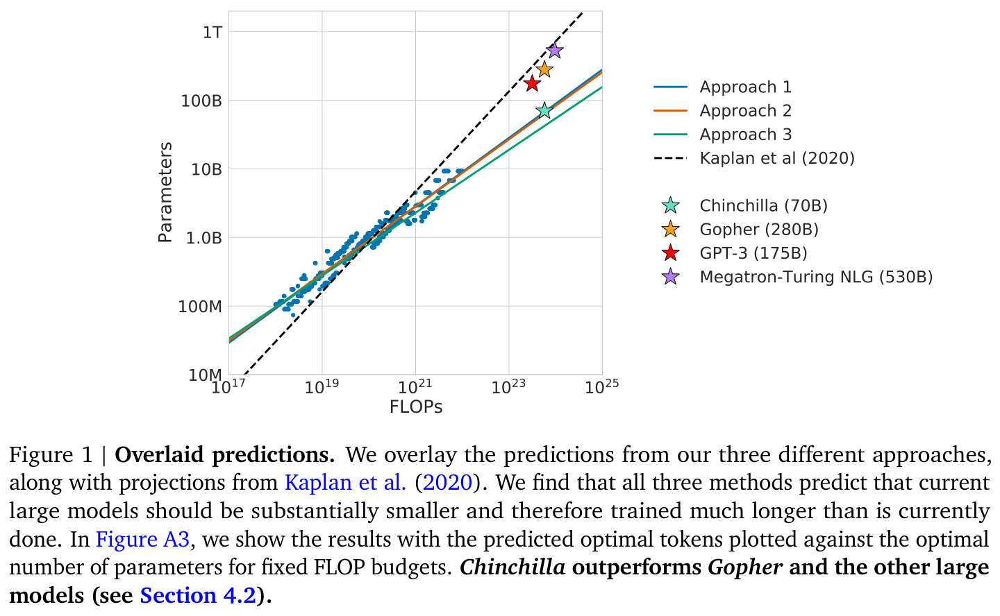
在本研究中，我们重新审视这个问题：在固定 FLOPs 预算下，1应当如何权衡模型规模和训练 token 数量？为回答这个问题，我们将最终预训练 loss2 \(L(N,D)\) 建模为模型参数数量 \(N\) 和训练 token 数量 \(D\) 的函数。由于计算预算 \(C\) 是已见训练 token 数量和模型参数数量的确定性函数 \(\operatorname{FLOPs}(N,D)\)，我们希望在约束 \(\operatorname{FLOPs}(N,D)=C\) 下最小化 \(L\)：
函数 \(N_{\mathrm{opt}}(C)\) 和 \(D_{\mathrm{opt}}(C)\) 描述计算预算 \(C\) 的最优分配。我们根据 400 多个模型的 loss，对这些函数进行经验估计；模型参数量从不足 70M 到超过 16B，训练 token 数量从 5B 到超过 400B，每种模型配置又分别采用若干不同的训练时长。我们的方法得出了与 Kaplan et al.（2020）明显不同的结果。图 1 展示了我们的主要结果，第 2 节解释了我们方法之间的差异。
根据我们估计的计算最优前沿，我们预测，对于训练 Gopher 所使用的计算预算，最优模型的规模应缩小为四分之一，而训练 token 数量应增加到 4 倍。我们使用 1.4 万亿 token 训练了一个更接近计算最优的 70B 模型 Chinchilla，以验证这一点。Chinchilla 不仅优于规模远大于自身的 Gopher，其较小的模型规模还显著降低了推理成本，并极大地方便了在较小硬件上进行下游应用。大型语言模型的能源成本会通过推理和微调使用得到摊销。因此，以更优方式训练较小模型所带来的好处，超出了性能提升本身的直接收益。
1例如，已知加速器数量和目标训练时长。
2为简化起见，我们分析平滑后的训练 loss。由于我们处于无限数据情形（训练 token 数量少于整个语料库的 token 数量），它是测试 loss 的无偏估计。
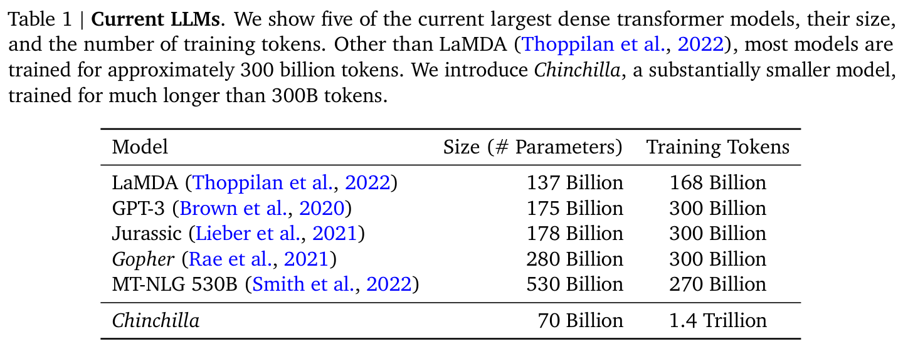
2. 相关工作
大型语言模型。过去几年出现了多种大型语言模型，包括稠密 transformer 模型（Brown et al., 2020；Lieber et al., 2021；Rae et al., 2021；Smith et al., 2022；Thoppilan et al., 2022）和混合专家（MoE）模型（Du et al., 2021；Fedus et al., 2021；Zoph et al., 2022）。最大的稠密 transformer 已超过 5000 亿参数（Smith et al., 2022）。训练越来越大模型的动力十分明确：迄今为止，扩大语言模型规模推动了许多语言建模任务最佳水平的提升。尽管如此，大型语言模型仍面临若干挑战，包括极高的计算需求（训练和推理成本随模型规模增加）（Rae et al., 2021；Thoppilan et al., 2022），以及获取更多高质量训练数据的需求。事实上，我们在本研究中发现，规模更大的高质量数据集将在语言模型的进一步扩展中发挥关键作用。
扩展行为的建模。理解语言模型的扩展行为及其迁移性质，对近期大型模型的发展一直十分重要（Hernandez et al., 2021；Kaplan et al., 2020）。Kaplan et al.（2020）首次展示了模型规模和 loss 在多个数量级上的可预测关系。作者研究了在给定计算预算下，如何选择最优模型规模进行训练。与我们类似，他们通过训练不同模型回答这一问题。我们的工作与 Kaplan et al.（2020）在几个重要方面有所不同。首先，他们对所有模型使用固定的训练 token 数量和学习率调度，这使其无法建模这些超参数对 loss 的影响。相比之下，我们发现，无论模型规模如何，将学习率调度设置为大致匹配训练 token 数量都能得到最佳最终 loss，见图 A1。因此，对于固定到 130B token 的余弦学习率调度，中间 loss 估计值（\(D'\ll130\mathrm{B}\)）会高估采用与 \(D'\) 匹配的调度长度进行训练时的模型 loss。使用这些中间 loss，会低估使用少于 130B token 的数据训练模型的有效性，并最终促成这样一种结论：随着计算预算增加，模型规模应比训练数据规模增长得更快。相比之下，我们的分析预测二者应以大致相同的速度增长。其次，我们纳入了参数量最高 16B 的模型，因为我们观察到 FLOP–loss 前沿存在轻微曲率（见附录 E）。事实上，我们分析中的大多数模型参数量超过 5 亿；相比之下，Kaplan et al.（2020）中的大多数训练运行要小得多，其中许多模型不足 100M 参数。
近期，Clark et al.（2022）专门研究了混合专家语言模型的扩展性质，表明随着模型规模增加，专家数量带来的扩展收益会减弱；他们的方法将 loss 建模为模型规模和专家数量这两个变量的函数。但是，该分析与 Kaplan et al.（2020）一样固定了训练 token 数量，因此可能低估了分支扩展所带来的提升。（本段接原文第 4 页。）
本页开头关于 MoE 扩展的跨页段落已接续于上一页译出。
估计大型模型的超参数。在选择语言模型及其训练过程时，模型规模和训练 token 数量并非仅有的两个待选参数。其他重要因素还包括学习率、学习率调度、batch 大小、优化器，以及宽深比。在本研究中，我们聚焦于模型规模和训练步数，并依靠现有研究及其提供的实验经验来确定其他必要超参数。Yang et al.（2021）研究了如何选择训练自回归 transformer 的多种参数，包括学习率和 batch 大小。McCandlish et al.（2018）发现，最优 batch 大小与模型规模之间只有较弱依赖。Shallue et al.（2018）和 Zhang et al.（2019）表明，可以使用比我们所用更大的 batch。Levine et al.（2020）研究了多种标准模型规模下的最优深宽比。我们使用的模型深度略小于他们的建议，因为这样在我们的硬件上能获得更好的实际运行时间表现。
改进的模型架构。近期，人们提出了多种有前景的传统稠密 transformer 替代方案。例如，通过条件计算，具有 1.7 万亿参数的 Switch transformer（Fedus et al., 2021）、1.2 万亿参数的 GLaM 模型（Du et al., 2021）以及其他大型 MoE 模型（Artetxe et al., 2021；Zoph et al., 2022），能够在使用相对较少训练和推理 FLOPs 的同时，提供较大的有效模型规模。然而，对于非常大的模型，路由模型的计算收益似乎会减弱（Clark et al., 2022）。另一种与之正交的改进语言模型的方法，是像 Borgeaud et al.（2021）、Guu et al.（2020）和 Lewis et al.（2020）那样，为 transformer 加入显式检索机制。这种方法实际上增加了训练期间看到的数据 token 数量（在 Borgeaud et al.（2021）中约增加到 10 倍）。这说明，语言模型的性能对训练数据规模的依赖可能比此前认为的更强。
3. 估计参数与训练 token 的最优分配
我们提出三种不同方法来回答推动本研究的问题：在固定 FLOPs 预算下，应当如何权衡模型规模和训练 token 数量？三种方法都首先训练一系列同时改变模型规模和训练 token 数量的模型，然后利用得到的训练曲线，拟合它们应如何扩展的经验估计器。与 Clark et al.（2022）和 Kaplan et al.（2020）一样，我们假设计算量与模型规模之间存在幂律关系，不过未来研究可能需要纳入大型模型下这一关系潜在的曲率。三种方法得到的预测相近，都表明随着计算量增加，参数量和训练 token 数量应当同比例增加，3具体比例见表 2。这与该主题此前的工作形成鲜明差异，值得进一步研究。
3我们按附录 F 所述计算 FLOPs。
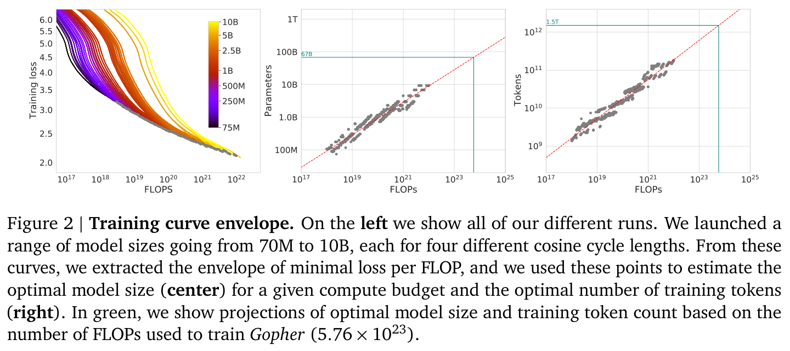
3.1. 方法 1：固定模型规模，改变训练 token 数量
在第一种方法中，我们对一个固定的模型系列（参数量从 70M 到超过 10B）改变训练步数，对每个模型采用 4 种不同的训练序列数量进行训练。由这些训练运行，我们能直接估计给定训练 FLOPs 下所达到的最小 loss。这一方法的训练细节见附录 D。
对每个参数量 \(N\)，我们训练 4 个不同模型，在跨度相差 16 倍的训练时长（以训练 token 数量衡量）内将学习率衰减为原来的十分之一。随后，对于每次运行，我们先平滑训练 loss 曲线，再进行插值。这样便得到了每次运行中从 FLOP 数到训练 loss 的连续映射。然后，对每个 FLOP 数，确定哪次运行获得最低 loss。利用这些插值函数，我们建立从任意 FLOP 数 \(C\) 到最高效的模型规模 \(N\) 和训练 token 数量 \(D\) 的映射，使 \(\operatorname{FLOPs}(N,D)=C\)。4在 1500 个按对数间距取样的 FLOP 值处，我们找出所有模型中达到最低 loss 的模型规模，以及所需训练 token 数量。最后，我们拟合幂律，估计任意给定计算量下的最优模型规模和训练 token 数量（见图 2 中、右图），得到关系 \(N_{\mathrm{opt}}\propto C^a\) 和 \(D_{\mathrm{opt}}\propto C^b\)。我们发现 \(a=0.50\)、\(b=0.50\)，汇总见表 2。D.4 节展示了在 \(10^{21}\) FLOPs 下采用我们分析建议的模型规模与 Kaplan et al.（2020）分析建议的模型规模进行的直接比较，使用我们预测的模型规模具有明显优势。
3.2. 方法 2：IsoFLOP 曲线
在第二种方法中，我们对一组固定的 9 个不同训练 FLOP 数6（从 \(6\times10^{18}\) 到 \(3\times10^{21}\) FLOPs）改变模型规模，5并考虑每个点的最终训练 loss。7相比之下，方法 1 考虑的是整个训练运行沿途的点 \((N,D,L)\)。这使我们能够直接回答：对于给定的 FLOP 预算，最优参数量是多少？
4注意，所有选出的点均位于训练的最后 15% 内。这表明，在使用 \(D\) 个 token 训练模型时，应选择在约 \(D\) 个 token 内衰减 10 倍的余弦周期长度，更多细节见附录 B。
5方法 2 的模型规模最高为 16B，而方法 1 仅使用最高 10B 的模型。
6训练 token 数量由模型规模和训练 FLOPs 决定。
7我们将余弦调度长度设为与 token 数量匹配，根据附录 B 的分析，这是最优设置。
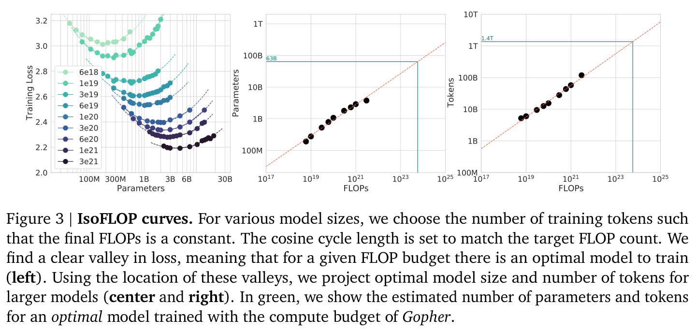
对于每个 FLOP 预算，我们在图 3 左图绘制平滑后的最终 loss 与参数量的关系。在所有情况下，我们都确保训练足够多样的模型规模，从而能观察到明确的 loss 最小值。我们对每条 IsoFLOPs 曲线拟合一条抛物线，直接估计达到最小 loss 的模型规模（图 3 左图）。与前一种方法相同，随后我们拟合 FLOPs 与 loss 最优的模型规模、训练 token 数量之间的幂律，见图 3 中、右图。我们同样拟合 \(N_{\mathrm{opt}}\propto C^a\) 和 \(D_{\mathrm{opt}}\propto C^b\) 形式的指数，发现 \(a=0.49\)、\(b=0.51\)，汇总见表 2。
3.3. 方法 3：拟合参数化 loss 函数
最后，我们将方法 1 和 2 所有实验的最终 loss，建模为模型参数数量和已见 token 数量的参数化函数。依据经典的风险分解（见 D.2 节），我们提出如下函数形式：
第一项表示在数据分布上进行理想生成过程时的 loss，应对应自然文本的熵。第二项表示，即使训练得很充分，具有 \(N\) 个参数的 transformer 仍逊于理想生成过程。最后一项表示，transformer 尚未训练至收敛，因为我们只在数据集分布的一个样本上进行了有限次优化步骤。
模型拟合。为估计 \((A,B,E,\alpha,\beta)\)，我们采用 L-BFGS 算法（Nocedal, 1980），最小化预测和观测的对数 loss 之间的 Huber loss（Huber, 1964）：
我们从一组网格初始化中选择最佳拟合，以应对可能的局部最小值。Huber loss（\(\delta=10^{-3}\)）对 outlier 具有鲁棒性，我们发现这对于在留出数据点上取得良好预测性能十分重要。D.2 节详细介绍了拟合过程和 loss 分解。
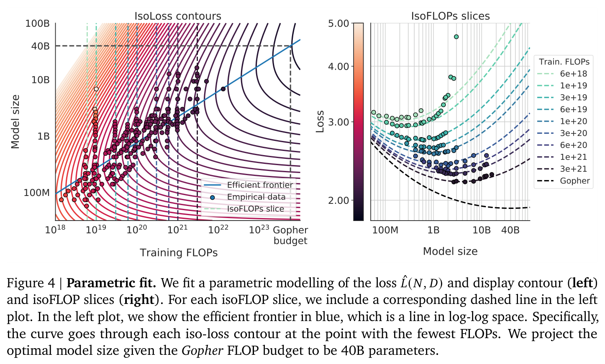
效率前沿。我们可以在约束 \(\operatorname{FLOPs}(N,D)\approx6ND\)（Kaplan et al., 2020）下最小化参数化 loss \(\widehat L\)，来近似函数 \(N_{\mathrm{opt}}\) 和 \(D_{\mathrm{opt}}\)。所得的 \(N_{\mathrm{opt}}\) 和 \(D_{\mathrm{opt}}\) 平衡公式（3）中依赖模型规模和数据的两项。根据构造，它们具有幂律形式：
图 4 左图展示拟合函数 \(\widehat L\) 的等值线，蓝色表示具有闭式表达式的计算效率前沿。这一方法得到 \(a=0.46\)、\(b=0.54\)，汇总见表 2。
3.4. 最优模型扩展
我们发现，尽管三种方法采用不同的拟合方式和不同的已训练模型，它们对于参数量和 token 数随 FLOPs 最优扩展的预测相近（见表 2）。三种方法都表明，随着计算预算增加，模型规模与训练数据量应当以大致相同的比例增加。第一种和第二种方法对于最优模型规模的预测非常接近，见图 1 和图 A3。第三种方法则预测，在更高计算预算下，更小的模型才是最优的。我们注意到，训练 FLOPs 较低（\(C\leq10^{21}\)）的观测点 \((L,N,D)\)，其残差 \(\lVert L-\widehat L(N,D)\rVert_2^2\) 大于计算预算较高的点。拟合模型给予 FLOPs 更多的点更高权重；由于使用了 Huber loss，低计算预算点会自动被视为 outlier。再考虑经验上观察到的前沿 \(C\mapsto N_{\mathrm{opt}}\) 的负曲率（见附录 E），这会使预测的 \(N_{\mathrm{opt}}\) 低于另外两种方法。
表 3 展示了使给定规模模型处于计算最优前沿所需 FLOPs 和 token 数量的估计。我们的发现表明，相对于各自的计算预算，当前这一代大型语言模型的规模明显过大，如图 1 所示。（本句接原文第 8 页。）
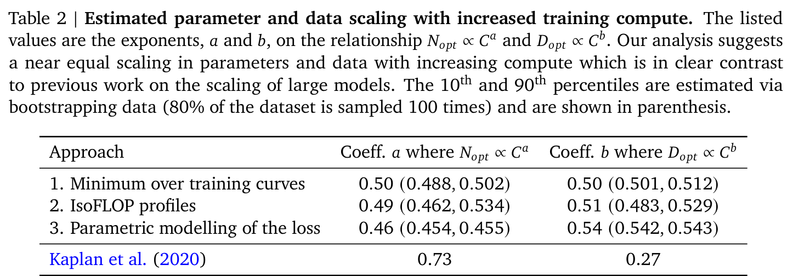
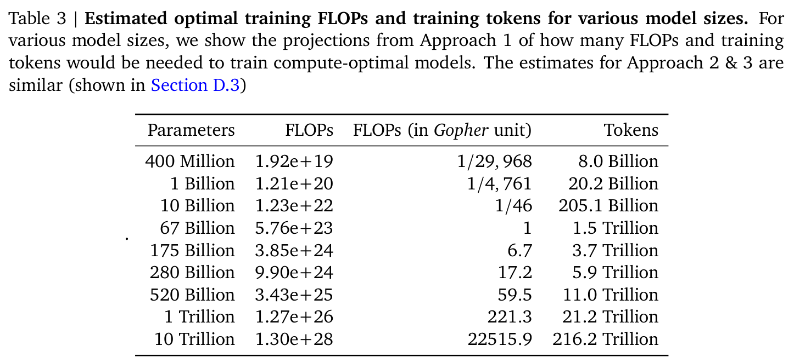
本页正文首句已接续于上一页译出。
例如，我们发现，1750 亿参数的模型应使用 \(4.41\times10^{24}\) FLOPs 的计算预算，并在超过 4.2 万亿 token 上训练。对于约 \(10^{25}\) FLOPs 的计算预算，2800 亿参数、类似 Gopher 的模型是最优选择，应使用 6.8 万亿 token 训练。除非拥有 \(10^{26}\) FLOPs 的计算预算（超过训练 Gopher 所用计算量的 250 倍），否则 1 万亿参数模型不太可能是最优训练选择。此外，预测所需的训练数据量远超当前训练大型模型所用的数据量，这凸显出，除了支持模型扩大的工程改进之外，数据集收集同样重要。尽管跨越多个数量级的外推存在很大不确定性，我们的分析仍明确表明：对于许多当前 LLM 所拥有的训练计算预算，本应以更多 token 训练更小的模型，以获得性能最好的模型。
在附录 C 中，我们在另外两个数据集——C4（Raffel et al., 2020a）和 GitHub 代码（Rae et al., 2021）——上复现了 IsoFLOP 分析。两种情况下都得到类似结论：模型规模和训练 token 数量应同比例扩大。
4. Chinchilla
根据第 3 节的分析，对于 Gopher 的计算预算，最优模型规模位于 400 亿到 700 亿参数之间。考虑到数据集和计算效率，我们选择这一范围较大的一端，即 70B 参数，在 1.4T token 上训练模型，以检验这一假设。本节将这个被我们称为 Chinchilla 的模型与 Gopher 及其他 LLM 进行比较。Chinchilla 和 Gopher 使用相同数量的 FLOPs 训练，但模型规模和训练 token 数量不同。
虽然大型语言模型的预训练计算成本很高，下游微调和推理也占据可观的计算用量（Rae et al., 2021）。由于 Chinchilla 的规模仅为 Gopher 的四分之一，其内存占用和推理成本也更低。
4.1. 模型与训练细节
训练 Chinchilla 使用的完整超参数见表 4。除以下差异之外，Chinchilla 采用与 Gopher 相同的模型架构和训练设置。
- 我们在 MassiveText（与 Gopher 相同的数据集）上训练 Chinchilla，但为适应增加的训练 token 数量，采用略有不同的子集分布（见表 A1）。
- Chinchilla 使用 AdamW（Loshchilov and Hutter, 2019），而非 Adam（Kingma and Ba, 2014），因为这能改善语言建模 loss 和微调后的下游任务性能。8
- 我们使用略作修改、不应用 NFKC 归一化的 SentencePiece（Kudo and Richardson, 2018）tokenizer 训练 Chinchilla。词表非常相似，94.15% 的 token 与训练 Gopher 时使用的相同。我们发现，例如，这对数学和化学内容的表示尤其有帮助。
- 虽然前向和反向计算均采用
bfloat16，我们仍在分布式优化器状态中存储权重的float32副本（Rajbhandari et al., 2020）。更多细节见 Rae et al.（2021）的经验教训部分。
附录 G 展示了 Chinchilla 与 Gopher 之间各项优化器相关变化的影响。本分析中的所有模型均使用 JAX（Bradbury et al., 2018）和 Haiku（Hennigan et al., 2020），在 TPUv3/TPUv4（Jouppi et al., 2017）上训练。我们在表 A8 中提供了 Chinchilla 的模型卡（Mitchell et al., 2019）。
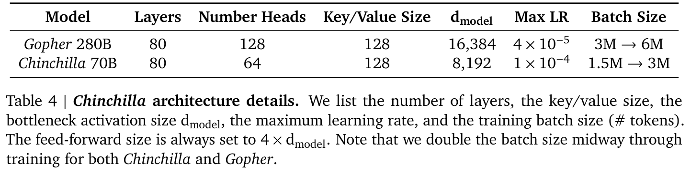
8有趣的是，AdamW 训练的模型直到余弦周期约 80% 处，训练性能才超过 Adam 训练的模型，但最终性能明显更好，见图 A7。
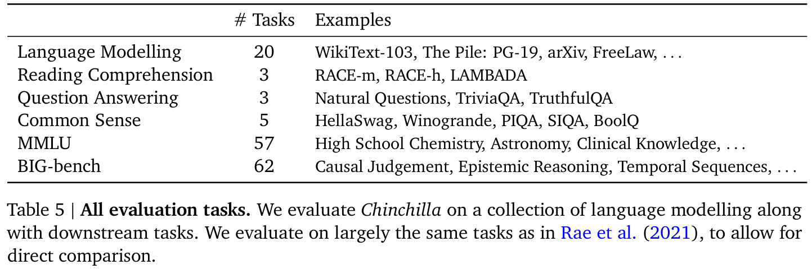
4.2. 结果
我们对 Chinchilla 进行了广泛评测，并与多种大型语言模型比较。评测覆盖 Rae et al.（2021）所列任务中的一个较大子集，见表 5。由于本研究聚焦于最优模型扩展，我们纳入了一个较大且具有代表性的子集，并引入一些新评测，以便更好地与现有其他大型模型比较。所有任务的评测细节均与 Rae et al.（2021）中的描述一致。
4.2.1. 语言建模
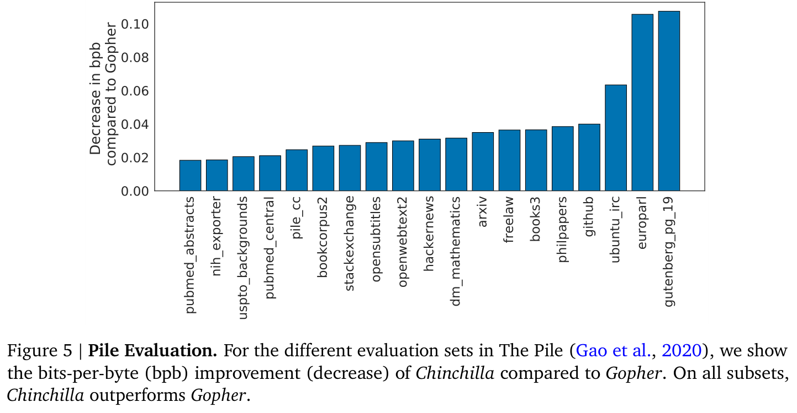
Chinchilla 在 The Pile（Gao et al., 2020）的所有评测子集上均显著优于 Gopher，见图 5。与 Jurassic-1（178B）（Lieber et al., 2021）相比，Chinchilla 除 dm_mathematics 和 ubuntu_irc 两个子集外，在其余所有子集上的表现均更好；原始 bits-per-byte 比较见表 A5。在 Wikitext103（Merity et al., 2017）上，Chinchilla 的困惑度为 7.16，而 Gopher 为 7.75。在这些语言建模基准上比较 Chinchilla 与 Gopher 时需要保持一定谨慎，因为 Chinchilla 使用了 Gopher 4 倍的数据训练，训练集与测试集泄漏可能人为提升结果。因此，我们更重视其他较少受泄漏影响的任务，例如 MMLU（Hendrycks et al., 2020）、BIG-bench（BIG-bench collaboration, 2021），以及多种闭卷问答和常识分析。（本段接原文第 11 页。）
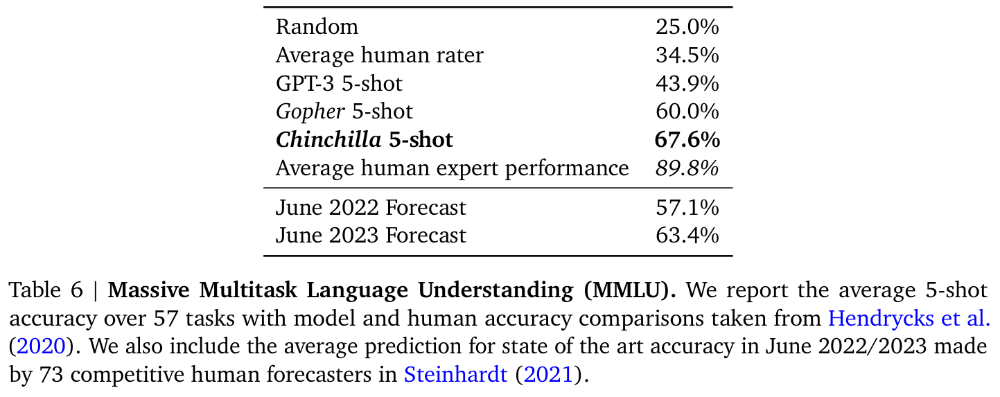
本页正文开头的跨页段落已接续于上一页译出。
4.2.2. MMLU
大规模多任务语言理解（MMLU）基准（Hendrycks et al., 2020）由一系列学科考试形式的问题组成。表 6 报告了 Chinchilla 在 MMLU 上的平均 5-shot 性能，完整分项结果见表 A6。在这一基准上，Chinchilla 虽然小得多，却显著优于 Gopher，平均准确率为 67.6%（比 Gopher 提高 7.6 个百分点）。值得关注的是，Chinchilla 甚至超过了专家对于 2023 年 6 月 63.4% 准确率的预测（见表 6）（Steinhardt, 2021）。此外，Chinchilla 在 4 个单独任务上达到超过 90% 的准确率：high_school_gov_and_politics、international_law、sociology 和 us_foreign_policy。据我们所知，此前没有其他模型在任何子集上取得超过 90% 的准确率。
图 6 展示了与 Gopher 按任务细分的比较。总体来看，Chinchilla 在绝大多数任务上提升了性能。在四个任务（college_mathematics、econometrics、moral_scenarios 和 formal_logic）上，Chinchilla 不如 Gopher，另有两个任务的性能没有变化。
4.2.3. 阅读理解
在末词预测数据集 LAMBADA（Paperno et al., 2016）上，Chinchilla 的准确率达到 77.4%，相比之下，Gopher 为 74.5%，MT-NLG 530B 为 76.6%（见表 7）。在 RACE-h 和 RACE-m（Lai et al., 2017）上，Chinchilla 明显优于 Gopher，两种情况下准确率都提高超过 10 个百分点，见表 7。
4.2.4. BIG-bench
我们在 Rae et al.（2021）报告的同一组 BIG-bench 任务（BIG-bench collaboration, 2021）上分析了 Chinchilla。与 MMLU 上观察到的情况类似，Chinchilla 在绝大多数任务上优于 Gopher（见图 7）。我们发现，Chinchilla 的平均性能提高 10.7 个百分点，准确率从 Gopher 的 54.4% 提升到 65.1%。在考察的 62 个任务中，Chinchilla 仅在四个任务上弱于 Gopher：crash_blossom、dark_humor_detection、mathematical_induction 和 logical_args。Chinchilla 的完整准确率结果见表 A7。（本段接原文第 12 页。）
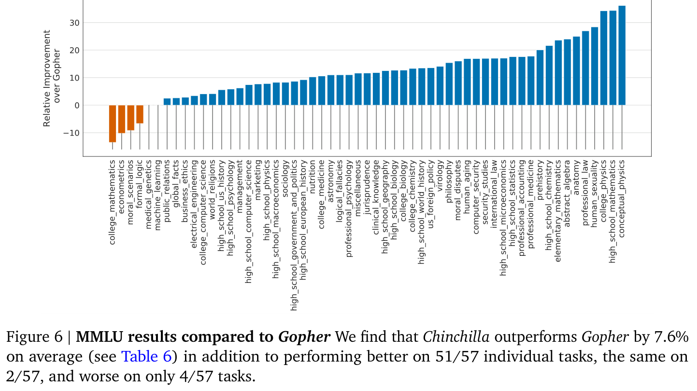
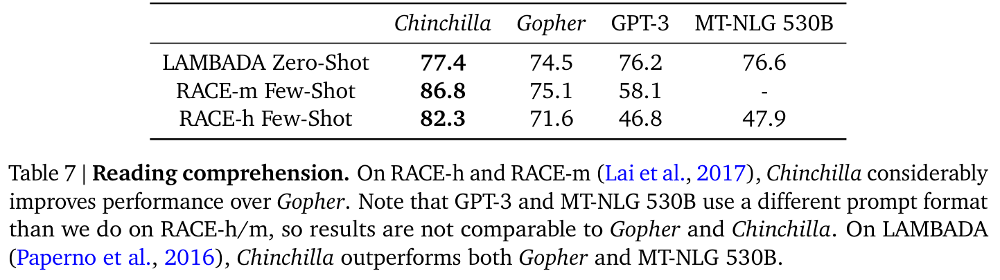
本页开头关于 BIG-bench 的跨页段落已接续于上一页译出。
4.2.5. 常识
我们在多种常识基准上评测 Chinchilla：PIQA（Bisk et al., 2020）、SIQA（Sap et al., 2019）、Winogrande（Sakaguchi et al., 2020）、HellaSwag（Zellers et al., 2019）和 BoolQ（Clark et al., 2019）。我们发现，Chinchilla 在所有任务上均优于 Gopher 和 GPT-3；除一个任务之外，也均优于 MT-NLG 530B，见表 8。
在 TruthfulQA（Lin et al., 2021）上，Chinchilla 在 0-shot、5-shot 和 10-shot 设置下分别达到 43.6%、58.5% 和 66.7% 的准确率。相比之下，Gopher 的 0-shot 和 10-shot 准确率分别只有 29.5% 和 43.7%。与 Lin et al.（2021）的发现形成鲜明对比，Chinchilla 取得的大幅提升（0-shot 准确率提高 14.1 个百分点）表明，仅仅更好地建模预训练数据，就能在这一基准上带来显著改进。
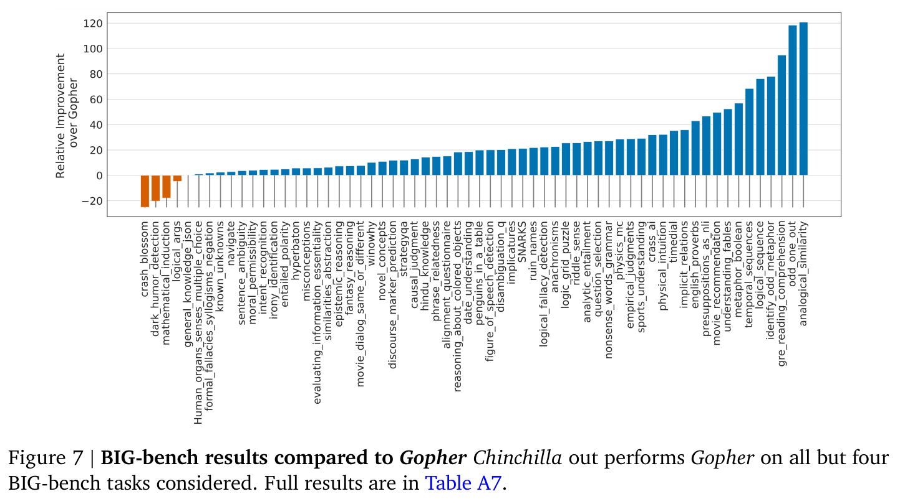
4.2.6. 闭卷问答
闭卷问答基准的结果见表 9。在 Natural Questions 数据集（Kwiatkowski et al., 2019）上，Chinchilla 创下新的闭卷最佳准确率：5-shot 为 31.5%，64-shot 为 35.5%，而 Gopher 分别为 21% 和 28%。在 TriviaQA（Joshi et al., 2017）上，我们展示经过滤集合（此前用于检索和开卷研究）和未过滤集合（此前用于大型语言模型评测）的结果。两种情况下，Chinchilla 都显著优于 Gopher。在经过滤版本上，Chinchilla 距开卷最佳水平（Izacard and Grave, 2020）仅差 7.9 个百分点。在未过滤集合上，Chinchilla 优于 GPT-3，见表 9。
4.2.7. 性别偏见与有害性
大型语言模型存在输出冒犯性语言、传播社会偏见和泄漏私人信息等潜在风险（Bender et al., 2021；Weidinger et al., 2021）。我们预期 Chinchilla 具有与 Gopher 类似的风险，因为 Chinchilla 在相同数据上训练，只是相对权重略有差异，且架构相似。这里，我们考察性别偏见（尤其是性别与职业偏见）和有害语言生成。我们选择一些常见评测来揭示潜在问题，但强调这些评测并不全面，在理解、评估和减轻 LLM 风险方面仍有大量工作要做。（本段接原文第 14 页。）
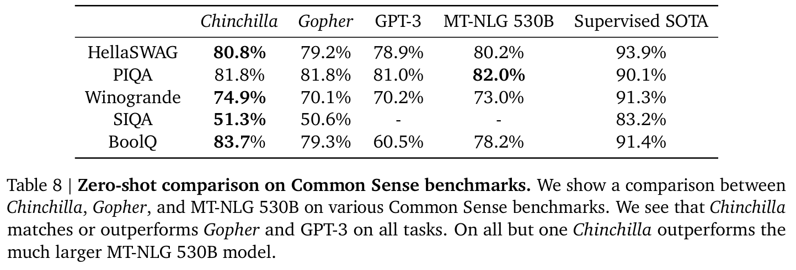
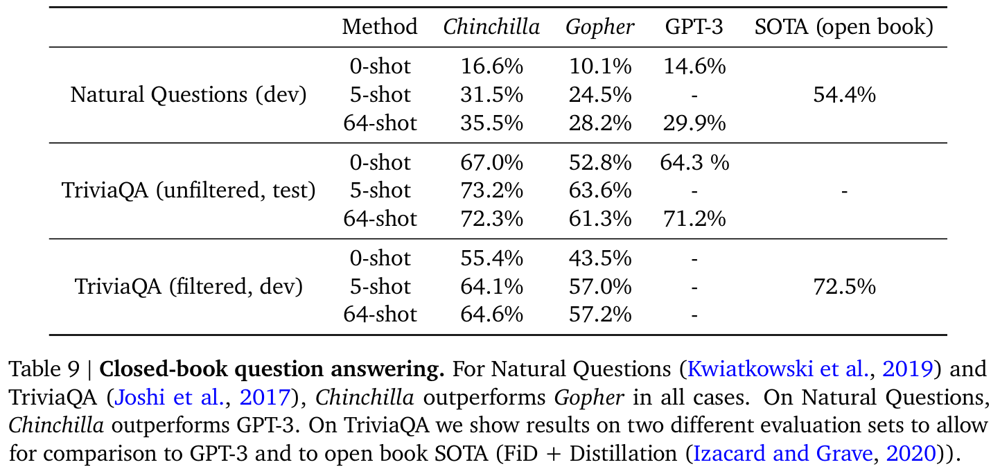
本页开头关于潜在风险的跨页段落已接续于上一页译出。
性别偏见。如 Rae et al.（2021）所述，大型语言模型反映了训练数据中关于不同群体（例如性别群体）的当代和历史话语，我们预期 Chinchilla 也是如此。这里，我们在零样本设置下使用 Winogender 数据集（Rudinger et al., 2018），检验潜在性别和职业偏见是否会在指代消解中产生不公平结果。Winogender 检验模型能否正确判断代词是否指向不同的职业词。无偏模型应当无论代词性别如何，都能正确预测代词指向哪个词。我们采用与 Rae et al.（2021）相同的设置（H.3 节进一步说明）。
如表 10 所示，在所有群体上，Chinchilla 正确消解代词的频率都高于 Gopher。有趣的是，男性代词的性能提升（3.2 个百分点）明显小于女性或中性代词（分别提升 8.3 和 9.2 个百分点）。我们还考虑了 gotcha 样例，即正确代词指代与基于劳工统计确定的性别刻板印象相矛盾的样例。同样，Chinchilla 的代词消解比 Gopher 更准确。按男性／女性和 gotcha／非 gotcha 对样例分类时，最大的提升出现在女性 gotcha 样例上（提升 10 个百分点）。因此，尽管 Chinchilla 在更多指代消解样例上克服性别刻板印象的表现全面优于 Gopher，不同代词的提升幅度仍不同，这说明采用更接近计算最优模型所带来的改进可能并不均衡。
样本有害性。语言模型能够生成有害语言，包括侮辱、仇恨言论、脏话和威胁（Gehman et al., 2020；Rae et al., 2021）。虽然“有害性”是一个涵盖多种现象的总称，且在 LM 中对其评估面临挑战（Welbl et al., 2021；Xu et al., 2021），自动分类器分数仍可以指示 LM 生成有害文本的程度。Rae et al.（2021）发现，通过增加模型参数量改善语言建模 loss，对无提示有害文本生成的影响微乎其微；这里，我们分析通过更接近计算最优的训练获得更低 LM loss 时，这一结论是否仍然成立。（本句接原文第 15 页。）
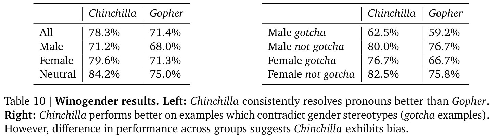
本页开头关于有害性分析的跨页句子已接续于上一页译出。
与 Rae et al.（2021）的方案类似，我们从 Chinchilla 生成 25,000 个无提示样本，并将其 PerspectiveAPI 有害性得分分布与 Gopher 生成样本的分布进行比较。若干汇总统计量表明不存在重大差异：Gopher 的有害性平均分（中位数）为 0.081（0.064），Chinchilla 为 0.087（0.066）；95 百分位分数分别为 Gopher 的 0.230 与 Chinchilla 的 0.238。也就是说，绝大多数生成样本被归类为无害，模型之间的差异可以忽略。与先前发现一致（Rae et al., 2021），这表明无条件文本生成的有害程度在很大程度上独立于模型质量（以语言建模 loss 衡量），即更好地建模训练数据集的模型不一定更有害。
5. 讨论与结论
迄今，大型语言模型训练的趋势是增加模型规模，而通常并不增加训练 token 数量。最大的稠密 transformer MT-NLG 530B，如今已超过仅两年前 GPT-3 的 1700 亿参数规模的 3 倍。然而，该模型和现有大多数大型模型一样，都在相近数量的 token——约 3000 亿——上训练。虽然训练这些超大模型的愿望带来了大量工程创新，但我们假设，训练越来越大模型的竞赛，正导致模型的表现明显低于相同计算预算本可达到的水平。
我们依据 400 多次训练运行的结果，提出了三种用于最优设置模型规模和训练时长的预测方法。三种方法都预测 Gopher 的规模明显过大，并估计在相同计算预算下，使用更多数据训练的较小模型会表现更好。我们直接训练了 70B 参数模型 Chinchilla 来检验这一假设，结果表明，它在几乎所有测量的评测任务上都优于 Gopher 及规模更大的模型。
虽然我们的方法能够在得到额外计算资源时预测如何扩展大型模型，它仍有若干局限。由于大型模型训练成本高，我们在大规模下只有两次可比较的训练运行（Chinchilla 和 Gopher），缺乏中间规模的额外测试。此外，我们假设计算效率前沿可以由计算预算、模型规模和训练 token 数量之间的幂律关系描述。然而，在高计算预算下，我们观察到 \(\log N_{\mathrm{opt}}\) 有一定凹性（见附录 E）。这说明我们可能仍高估了大型模型的最优规模。最后，我们分析使用的所有训练运行，所用数据都不到一个 epoch，未来工作可以考虑多 epoch 情形。尽管存在这些局限，Chinchilla 与 Gopher 的比较验证了我们的性能预测，因此得以在相同计算预算下训练更好且更轻量的模型。（本段接原文第 16 页。）
本页首句已接续于上一页译出。
虽然近期许多工作支持了越来越大模型的训练，我们的分析表明，需要更多关注数据集扩展。我们推测，只有数据质量足够高时，扩展到越来越大的数据集才有益。这要求负责任地收集更大数据集，并高度重视数据质量。对于更大的数据集，需要额外谨慎，确保在语言建模 loss 和下游任务中都适当考虑训练集与测试集重叠。最后，使用万亿级 token 训练带来许多伦理和隐私问题。从网络抓取的大型数据集会包含有害语言、偏见和私人信息。随着使用更大的数据集，此类信息的数量（即使频率不变）也会增加，这使得检查数据集变得更加重要。Chinchilla 确实存在偏见和有害性问题，不过有趣的是，它似乎比 Gopher 受影响更小。更好地理解大型语言模型性能与有害性如何相互作用，是未来一个重要研究问题。
虽然我们将这一方法用于自回归语言模型训练，我们预期其他模态中模型规模与数据量之间也存在类似权衡。由于大型模型训练成本非常高，事先选定最优模型规模与训练步数至关重要。我们提出的方法易于在新设置下复现。
6. 致谢
感谢 Jean-baptiste Alayrac、Kareem Ayoub、Chris Dyer、Nando de Freitas、Demis Hassabis、Geoffrey Irving、Koray Kavukcuoglu、Nate Kushman 和 Angeliki Lazaridou 对稿件提出有益意见。感谢 Andy Brock、Irina Higgins、Michela Paganini、Francis Song 及 DeepMind 其他同事提供有益讨论。我们也非常感谢 JAX 和 XLA 团队的支持与帮助。
参考文献
M. Artetxe、S. Bhosale、N. Goyal、T. Mihaylov、M. Ott、S. Shleifer、X. V. Lin、J. Du、S. Iyer、R. Pasunuru、G. Anantharaman、X. Li、S. Chen、H. Akin、M. Baines、L. Martin、X. Zhou、P. S. Koura、B. O’Horo、J. Wang、L. Zettlemoyer、M. Diab、Z. Kozareva 和 V. Stoyanov。使用混合专家进行高效大规模语言建模。arXiv:2112.10684，2021。
E. M. Bender、T. Gebru、A. McMillan-Major 和 S. Shmitchell。随机鹦鹉的危险：语言模型会不会过大？载于 2021 ACM 公平性、问责制与透明度会议论文集，610–623 页，2021。
BIG-bench collaboration。超越模仿游戏：衡量与外推语言模型的能力。准备中，2021。URL：https://github.com/google/BIG-bench/。
Y. Bisk、R. Zellers、J. Gao、Y. Choi 等。PIQA：用自然语言进行物理常识推理。载于 AAAI 人工智能会议论文集，第 34 卷，7432–7439 页，2020。
S. Borgeaud、A. Mensch、J. Hoffmann、T. Cai、E. Rutherford、K. Millican、G. van den Driessche、J.-B. Lespiau、B. Damoc、A. Clark、D. de Las Casas、A. Guy、J. Menick、R. Ring、T. Hennigan、S. Huang、L. Maggiore、C. Jones、A. Cassirer、A. Brock、M. Paganini、G. Irving、O. Vinyals、S. Osindero、K. Simonyan、J. W. Rae、E. Elsen 和 L. Sifre。通过从万亿 token 中检索来改进语言模型。arXiv 2112.04426，2021。
J. Bradbury, R. Frostig, P. Hawkins, M. J. Johnson, C. Leary, D. Maclaurin, G. Necula, A. Paszke, J. VanderPlas, S. Wanderman-Milne, and Q. Zhang. JAX：Python+NumPy 程序的可组合变换。 2018. URL http://github.com/google/jax.
T. Brown, B. Mann, N. Ryder, M. Subbiah, J. D. Kaplan, P. Dhariwal, A. Neelakantan, P. Shyam, G. Sastry, A. Askell, S. Agarwal, A. Herbert-Voss, G. Krueger, T. Henighan, R. Child, A. Ramesh, D. Ziegler, J. Wu, C. Winter, C. Hesse, M. Chen, E. Sigler, M. Litwin, S. Gray, B. Chess, J. Clark, C. Berner, S. McCandlish, A. Radford, I. Sutskever, and D. Amodei. 语言模型是少样本学习器。 In H. Larochelle, M. Ranzato, R. Hadsell, M. F. Balcan, and H. Lin, editors, Advances in Neural Information Processing Systems, volume 33, pages 1877–1901. Curran Associates, Inc., 2020. URL https://proceedings.neurips.cc/paper/2020/file/1457c0d6bfcb49674 18bfb8ac142f64a-Paper.pdf.
S. Bubeck. 凸优化：算法与复杂度。 Foundations and Trends in Machine Learning, 8(3-4):231–357, 2015. URL http://www.nowpublishers.com/article/Detail s/MAL-050.
A. Clark, D. d. l. Casas, A. Guy, A. Mensch, M. Paganini, J. Hoffmann, B. Damoc, B. Hechtman, T. Cai, S. Borgeaud, G. v. d. Driessche, E. Rutherford, T. Hennigan, M. Johnson, K. Millican, A. Cassirer, C. Jones, E. Buchatskaya, D. Budden, L. Sifre, S. Osindero, O. Vinyals, J. Rae, E. Elsen, K. Kavukcuoglu, and K. Simonyan. 路由语言模型的统一 scaling laws， 2022. URL https://arxiv.org/abs/2202.01169.
C. Clark, K. Lee, M.-W. Chang, T. Kwiatkowski, M. Collins, and K. Toutanova. BoolQ：探索自然是非问题令人意外的难度。 In Proceedings of the 2019 Conference of the North American Chapter of the Association for Computational Linguistics: Human Language Technologies, Volume 1 (Long and Short Papers), pages 2924–2936, 2019.
N. Du, Y. Huang, A. M. Dai, S. Tong, D. Lepikhin, Y. Xu, M. Krikun, Y. Zhou, A. W. Yu, O. Firat, B. Zoph, L. Fedus, M. Bosma, Z. Zhou, T. Wang, Y. E. Wang, K. Webster, M. Pellat, K. Robinson, K. MeierHellstern, T. Duke, L. Dixon, K. Zhang, Q. V. Le, Y. Wu, Z. Chen, and C. Cui. GLaM：使用混合专家高效扩展语言模型， 2021. URL https://arxiv.org/abs/2112.06905.
W. Fedus, B. Zoph, and N. Shazeer. Switch transformers：以简单而高效的稀疏性扩展到万亿参数模型。 arXiv preprint arXiv:2101.03961, 2021.
L. Gao, S. Biderman, S. Black, L. Golding, T. Hoppe, C. Foster, J. Phang, H. He, A. Thite, N. Nabeshima, S. Presser, and C. Leahy. The Pile：用于语言建模的 800GB 多样化文本数据集。 arXiv preprint arXiv:2101.00027, 2020.
S. Gehman, S. Gururangan, M. Sap, Y. Choi, and N. A. Smith. RealToxicityPrompts：评估语言模型中的神经有害退化。 In Findings of the Association for Computational Linguistics: EMNLP 2020, pages 3356–3369, Online, Nov. 2020. Association for Computational Linguistics. doi: 10.18653/v1/2020.findings-emnlp.301. URL https://aclanthology.org/2 020.findings-emnlp.301.
K. Guu, K. Lee, Z. Tung, P. Pasupat, and M.-W. Chang. REALM：检索增强语言模型预训练， 2020.
D. Hendrycks, C. Burns, S. Basart, A. Zou, M. Mazeika, D. Song, and J. Steinhardt. 衡量大规模多任务语言理解。 arXiv preprint arXiv:2009.03300, 2020.
T. Hennigan, T. Cai, T. Norman, and I. Babuschkin. Haiku：用于 JAX 的 Sonnet。 2020. URL http: //github.com/deepmind/dm-haiku.
本页原文链接
- http://github.com/deepmind/dm-haiku
- http://github.com/google/jax
- http://www.nowpublishers.com/article/Details/MAL-050
- https://aclanthology.org/2020.findings-emnlp.301
- https://arxiv.org/abs/2112.06905
- https://arxiv.org/abs/2202.01169
- https://proceedings.neurips.cc/paper/2020/file/1457c0d6bfcb4967418bfb8ac142f64a-Paper.pdf
D. Hernandez, J. Kaplan, T. Henighan, and S. McCandlish. 迁移的 scaling laws， 2021.
P. J. Huber. 位置参数的鲁棒估计。 The Annals of Mathematical Statistics, 35 (1):73–101, Mar. 1964. ISSN 0003-4851, 2168-8990. doi: 10.1214/aoms/1177703732. URL https://projecteuclid.org/journals/annals-of-mathematical-statistics/vol ume-35/issue-1/Robust-Estimation-of-a-Location-Parameter/10.1214/aoms/11 77703732.full.
G. Izacard and E. Grave. 面向问答从阅读器向检索器蒸馏知识， 2020.
M. Joshi, E. Choi, D. Weld, and L. Zettlemoyer. TriviaQA：面向阅读理解的大规模远程监督挑战数据集。 arXiv e-prints, art. arXiv:1705.03551, 2017.
N. P. Jouppi, C. Young, N. Patil, D. Patterson, G. Agrawal, R. Bajwa, S. Bates, S. Bhatia, N. Boden, A. Borchers, R. Boyle, P.-l. Cantin, C. Chao, C. Clark, J. Coriell, M. Daley, M. Dau, J. Dean, B. Gelb, T. V. Ghaemmaghami, R. Gottipati, W. Gulland, R. Hagmann, C. R. Ho, D. Hogberg, J. Hu, R. Hundt, D. Hurt, J. Ibarz, A. Jaffey, A. Jaworski, A. Kaplan, H. Khaitan, D. Killebrew, A. Koch, N. Kumar, S. Lacy, J. Laudon, J. Law, D. Le, C. Leary, Z. Liu, K. Lucke, A. Lundin, G. MacKean, A. Maggiore, M. Mahony, K. Miller, R. Nagarajan, R. Narayanaswami, R. Ni, K. Nix, T. Norrie, M. Omernick, N. Penukonda, A. Phelps, J. Ross, M. Ross, A. Salek, E. Samadiani, C. Severn, G. Sizikov, M. Snelham, J. Souter, D. Steinberg, A. Swing, M. Tan, G. Thorson, B. Tian, H. Toma, E. Tuttle, V. Vasudevan, R. Walter, W. Wang, E. Wilcox, and D. H. Yoon. 张量处理单元在数据中心中的性能分析。 In Proceedings of the 44th Annual International Symposium on Computer Architecture, ISCA ’17, page 1–12, New York, NY, USA, 2017. Association for Computing Machinery. ISBN 9781450348928. doi: 10.1145/3079856.3080246. URL https://doi.org/10.1145/3079856.3080246.
J. Kaplan, S. McCandlish, T. Henighan, T. B. Brown, B. Chess, R. Child, S. Gray, A. Radford, J. Wu, and D. Amodei. 神经语言模型的 scaling laws。 arXiv preprint arXiv:2001.08361, 2020.
D. P. Kingma and J. Ba. Adam：一种随机优化方法。 arXiv preprint arXiv:1412.6980, 2014.
T. Kudo and J. Richardson. SentencePiece：用于神经文本处理的简单且与语言无关的子词 tokenizer 与反 tokenizer。 arXiv preprint arXiv:1808.06226, 2018.
T. Kwiatkowski, J. Palomaki, O. Redfield, M. Collins, A. Parikh, C. Alberti, D. Epstein, I. Polosukhin, M. Kelcey, J. Devlin, K. Lee, K. N. Toutanova, L. Jones, M.-W. Chang, A. Dai, J. Uszkoreit, Q. Le, and S. Petrov. Natural Questions：面向问答研究的基准。 Transactions of the Association of Computational Linguistics, 2019.
G. Lai, Q. Xie, H. Liu, Y. Yang, and E. Hovy. RACE：来源于考试的大规模阅读理解数据集。 In Proceedings of the 2017 Conference on Empirical Methods in Natural Language Processing, pages 785–794, Copenhagen, Denmark, Sept. 2017. Association for Computational Linguistics. doi: 10.18653/v1/D17-1082. URL https://aclanthology.org/D17-1082.
Y. Levine, N. Wies, O. Sharir, H. Bata, and A. Shashua. self-attention 中深度与宽度的相互作用。 arXiv preprint arXiv:2006.12467, 2020.
P. Lewis, E. Perez, A. Piktus, F. Petroni, V. Karpukhin, N. Goyal, H. Küttler, M. Lewis, W.-t. Yih, T. Rocktäschel, S. Riedel, and D. Kiela. 面向知识密集型 NLP 任务的检索增强生成。 In Advances in Neural Information Processing Systems, volume 33, pages 9459–9474, 2020.
O. Lieber, O. Sharir, B. Lenz, and Y. Shoham. Jurassic-1：技术细节与评测。 White Paper. AI21 Labs, 2021.
S. Lin, J. Hilton, and O. Evans. TruthfulQA：衡量模型如何模仿人类谬误。 arXiv preprint arXiv:2109.07958, 2021.
I. Loshchilov and F. Hutter. 解耦权重衰减正则化。 In International Conference on Learning Representations, 2019. URL https://openreview.net/forum?id=Bkg6RiCqY7.
S. McCandlish, J. Kaplan, D. Amodei, and O. D. Team. 大 batch 训练的经验模型， 2018.
S. Merity, C. Xiong, J. Bradbury, and R. Socher. Pointer sentinel 混合模型。 International Conference on Learning Representations, 2017.
M. Mitchell, S. Wu, A. Zaldivar, P. Barnes, L. Vasserman, B. Hutchinson, E. Spitzer, I. D. Raji, and T. Gebru. 用于模型报告的模型卡。 In Proceedings of the conference on fairness, accountability, and transparency, pages 220–229, 2019.
J. Nocedal. 以有限存储更新拟牛顿矩阵。 Mathematics of Computation, 35(151):773–782, 1980. ISSN 0025-5718. doi: 10.2307/2006193. URL https://www.jstor. org/stable/2006193.
D. Paperno, G. Kruszewski, A. Lazaridou, Q. N. Pham, R. Bernardi, S. Pezzelle, M. Baroni, G. Boleda, and R. Fernández. LAMBADA 数据集：需要广泛篇章上下文的词语预测， 2016.
J. Rae, S. Borgeaud, T. Cai, K. Millican, J. Hoffmann, F. Song, J. Aslanides, S. Henderson, R. Ring, S. Young, E. Rutherford, T. Hennigan, J. Menick, A. Cassirer, R. Powell, G. van den Driessche, L. A. Hendricks, M. Rauh, P.-S. Huang, A. Glaese, J. Welbl, S. Dathathri, S. Huang, J. Uesato, J. Mellor, I. Higgins, A. Creswell, N. McAleese, A. Wu, E. Elsen, S. Jayakumar, E. Buchatskaya, D. Budden, E. Sutherland, K. Simonyan, M. Paganini, L. Sifre, L. Martens, X. L. Li, A. Kuncoro, A. Nematzadeh, E. Gribovskaya, D. Donato, A. Lazaridou, A. Mensch, J.-B. Lespiau, M. Tsimpoukelli, N. Grigorev, D. Fritz, T. Sottiaux, M. Pajarskas, T. Pohlen, Z. Gong, D. Toyama, C. de Masson d’Autume, Y. Li, T. Terzi, I. Babuschkin, A. Clark, D. de Las Casas, A. Guy, J. Bradbury, M. Johnson, L. Weidinger, I. Gabriel, W. Isaac, E. Lockhart, S. Osindero, L. Rimell, C. Dyer, O. Vinyals, K. Ayoub, J. Stanway, L. Bennett, D. Hassabis, K. Kavukcuoglu, and G. Irving. 扩展语言模型：训练 Gopher 的方法、分析与见解。 arXiv 2112.11446, 2021.
J. W. Rae, A. Potapenko, S. M. Jayakumar, T. P. Lillicrap, K. Choromanski, V. Likhosherstov, D. Dohan, X. Song, A. Gane, T. Sarlos, et al. 面向长程序列建模的压缩 transformer。 Advances in Neural Information Processing Systems, 33:6154–6158, 2020.
C. Raffel, N. Shazeer, A. Roberts, K. Lee, S. Narang, M. Matena, Y. Zhou, W. Li, and P. J. Liu. 使用统一的文本到文本 transformer 探索迁移学习的极限。 Journal of Machine Learning Research, 21(140):1–67, 2020a. URL http://jmlr.org/papers/v21/20-074.html.
C. Raffel, N. Shazeer, A. Roberts, K. Lee, S. Narang, M. Matena, Y. Zhou, W. Li, and P. J. Liu. 使用统一的文本到文本 transformer 探索迁移学习的极限。 Journal of Machine Learning Research, 21(140):1–67, 2020b.
S. Rajbhandari, J. Rasley, O. Ruwase, and Y. He. ZeRO：面向万亿参数模型训练的内存优化。 In SC20: International Conference for High Performance Computing, Networking, Storage and Analysis, pages 1–16. IEEE, 2020.
H. Robbins and S. Monro. 一种随机逼近方法。 The Annals of Mathematical Statistics, 22(3):400–407, Sept. 1951.
R. Rudinger, J. Naradowsky, B. Leonard, and B. Van Durme. 指代消解中的性别偏见。 In Proceedings of the 2018 Conference of the North American Chapter of the Association for Computational Linguistics: Human Language Technologies, New Orleans, Louisiana, June 2018. Association for Computational Linguistics.
K. Sakaguchi, R. Le Bras, C. Bhagavatula, and Y. Choi. Winogrande：大规模对抗性 Winograd schema 挑战。 In Proceedings of the AAAI Conference on Artificial Intelligence, volume 34, pages 8732–8740, 2020.
M. Sap, H. Rashkin, D. Chen, R. LeBras, and Y. Choi. SocialIQA：关于社会互动的常识推理。 Proceedings of the 2019 Conference on Empirical Methods in Natural Language Processing, 2019.
C. J. Shallue, J. Lee, J. Antognini, J. Sohl-Dickstein, R. Frostig, and G. E. Dahl. 衡量数据并行对神经网络训练的影响。 arXiv preprint arXiv:1811.03600, 2018.
J. W. Siegel and J. Xu. 具有一般激活函数的神经网络的逼近速率。 Neural Networks, 128:313–321, Aug. 2020. URL https://www.sciencedirect.com/scienc e/article/pii/S0893608020301891.
S. Smith, M. Patwary, B. Norick, P. LeGresley, S. Rajbhandari, J. Casper, Z. Liu, S. Prabhumoye, G. Zerveas, V. Korthikanti, E. Zhang, R. Child, R. Y. Aminabadi, J. Bernauer, X. Song, M. Shoeybi, Y. He, M. Houston, S. Tiwary, and B. Catanzaro. 使用 DeepSpeed 与 Megatron 训练大规模生成语言模型 Megatron-Turing NLG 530B。 arXiv preprint arXiv:2201.11990, 2022.
J. Steinhardt. AI 预测的最新进展与经验教训， 2021. URL https://bounded-regret.g host.io/ai-forecasting/.
Y. Tay, M. Dehghani, J. Rao, W. Fedus, S. Abnar, H. W. Chung, S. Narang, D. Yogatama, A. Vaswani, and D. Metzler. 高效扩展：来自 transformer 预训练与微调的见解， 2021.
R. Thoppilan, D. D. Freitas, J. Hall, N. Shazeer, A. Kulshreshtha, H.-T. Cheng, A. Jin, T. Bos, L. Baker, Y. Du, Y. Li, H. Lee, H. S. Zheng, A. Ghafouri, M. Menegali, Y. Huang, M. Krikun, D. Lepikhin, J. Qin, D. Chen, Y. Xu, Z. Chen, A. Roberts, M. Bosma, Y. Zhou, C.-C. Chang, I. Krivokon, W. Rusch, M. Pickett, K. Meier-Hellstern, M. R. Morris, T. Doshi, R. D. Santos, T. Duke, J. Soraker, B. Zevenbergen, V. Prabhakaran, M. Diaz, B. Hutchinson, K. Olson, A. Molina, E. Hoffman-John, J. Lee, L. Aroyo, R. Rajakumar, A. Butryna, M. Lamm, V. Kuzmina, J. Fenton, A. Cohen, R. Bernstein, R. Kurzweil, B. Aguera-Arcas, C. Cui, M. Croak, E. Chi, and Q. Le. LaMDA：面向对话应用的语言模型， 2022.
A. Vaswani, N. Shazeer, N. Parmar, J. Uszkoreit, L. Jones, A. N. Gomez, Ł. Kaiser, and I. Polosukhin. 只需 attention。 In Advances in neural information processing systems, pages 5998–6008, 2017.
L. Weidinger, J. Mellor, M. Rauh, C. Griffin, J. Uesato, P.-S. Huang, M. Cheng, M. Glaese, B. Balle, A. Kasirzadeh, Z. Kenton, S. Brown, W. Hawkins, T. Stepleton, C. Biles, A. Birhane, J. Haas, L. Rimell, L. A. Hendricks, W. Isaac, S. Legassick, G. Irving, and I. Gabriel. 语言模型造成伤害的伦理与社会风险。 arXiv submission, 2021.
J. Welbl, A. Glaese, J. Uesato, S. Dathathri, J. Mellor, L. A. Hendricks, K. Anderson, P. Kohli, B. Coppin, and P.-S. Huang. 消除语言模型有害性的挑战。 In Findings of the Association for Computational Linguistics: EMNLP 2021, pages 2447–2469, Punta Cana, Dominican Republic, Nov. 2021. Association for Computational Linguistics. URL https://aclanthology.org/2021. findings-emnlp.210.
A. Xu, E. Pathak, E. Wallace, S. Gururangan, M. Sap, and D. Klein. 消除语言模型有害性可能边缘化少数群体声音。 In Proceedings of the 2021 Conference of the North American Chapter of the Association for Computational Linguistics: Human Language Technologies, pages 2390–2397, Online, June 2021. Association for Computational Linguistics. doi: 10.18653/v1/2021 .naacl-main.190. URL https://aclanthology.org/2021.naacl-main.190.
G. Yang, E. J. Hu, I. Babuschkin, S. Sidor, X. Liu, D. Farhi, N. Ryder, J. Pachocki, W. Chen, and J. Gao. 通过零样本超参数迁移调优大型神经网络。 In A. Beygelzimer, Y. Dauphin, P. Liang, and J. W. Vaughan, editors, Advances in Neural Information Processing Systems, 2021. URL https://openreview.net/forum?id=Bx6qKuBM2AD.
R. Zellers, A. Holtzman, Y. Bisk, A. Farhadi, and Y. Choi. HellaSwag：机器真的能补全你的句子吗？ In Proceedings of the 57th Annual Meeting of the Association for Computational Linguistics, 2019.
G. Zhang, L. Li, Z. Nado, J. Martens, S. Sachdeva, G. Dahl, C. Shallue, and R. B. Grosse. 哪些算法选择在何种 batch 大小下重要？来自含噪二次模型的见解。 In H. Wallach, H. Larochelle, A. Beygelzimer, F. d'Alché-Buc, E. Fox, and R. Garnett, editors, Advances in Neural Information Processing Systems, volume 32. Curran Associates, Inc., 2019. URL https: //proceedings.neurips.cc/paper/2019/file/e0eacd983971634327ae1819ea8b621 4-Paper.pdf.
B. Zoph, I. Bello, S. Kumar, N. Du, Y. Huang, J. Dean, N. Shazeer, and W. Fedus. 设计有效的稀疏专家模型， 2022.
附录
A. 训练数据集
表 A1 展示 Chinchilla 及所有 scaling 训练运行使用的训练数据集组成。请注意，MassiveWeb 和 Wikipedia 两个子集都使用了超过一个 epoch。
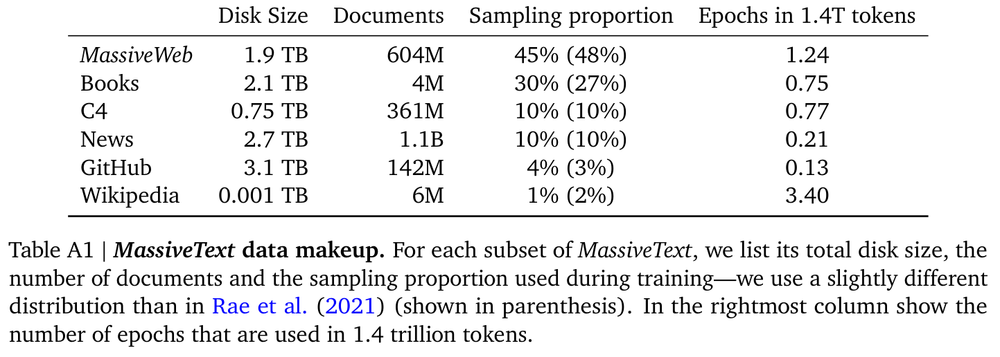
B. 最优余弦周期长度
我们对余弦周期长度及相应学习率下降作出一个关键假设（遵循 Rae et al.（2021），我们将学习率衰减 10 倍）。9我们发现，若将余弦周期长度设置得远长于目标训练步数，会使模型训练次优，见图 A1。因此，我们假设，给定 FLOP 预算，最优训练模型的余弦周期长度应正确校准到最大步数；主要分析遵循这一规则。
C. 不同数据集上 scaling 结果的一致性
我们展示在两个不同数据集上训练后的 IsoFLOP（方法 2）分析结果：C4（Raffel et al., 2020b）和 GitHub 代码（使用 Rae et al.（2021）的数据），结果见表 A2。对于这两组使用 MassiveText 子集的实验，我们采用与 MassiveText 实验相同的 tokenizer。
我们发现，这些数据集上的扩展行为与 MassiveText 上的结果十分相近，见图 A2 和表 A2。这说明，只要训练不超过一个 epoch，我们的结果就不依赖于数据集。
9我们发现，在相同步数内衰减 10 倍与衰减到 0.0 的差异很小，不过衰减 10 倍的性能略好。衰减幅度更小（5 倍）则明显更差。
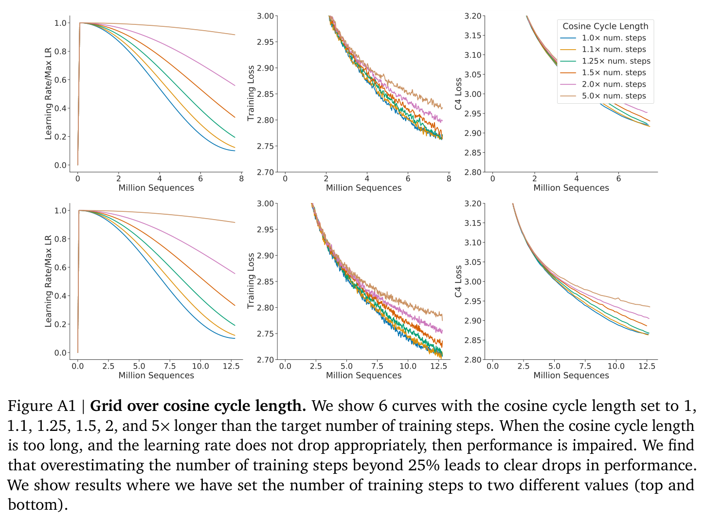
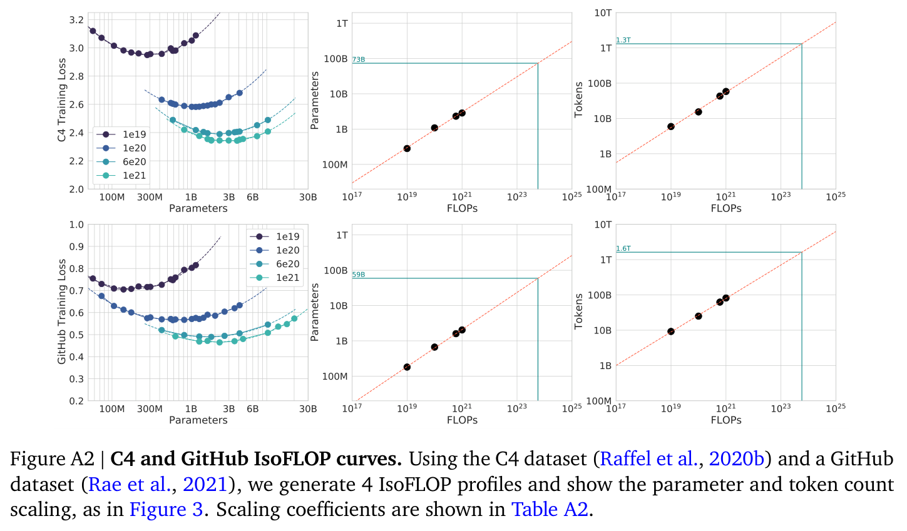
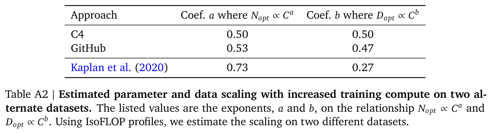
D. Scaling 分析的细节
D.1. 方法 1：固定模型规模，改变训练序列数量
最小模型使用 \(2\times10^{-4}\) 的最大学习率，最大模型使用 \(1.25\times10^{-4}\)。所有情况下，学习率都在训练过程中按余弦调度衰减 10 倍。我们假设，余弦周期长度应大致匹配训练步数。我们发现，若余弦周期超过训练步数 25% 以上，性能就会明显下降，见图 A1。10我们采用窗口长度为 10 步的高斯平滑处理训练曲线。
D.2. 方法 3：loss 的参数化拟合
本节首先说明如何推导公式（2）。为清晰起见，在此重新写出该公式：
它基于将期望风险分解为函数逼近项与优化次优项。随后，我们给出拟合这些参数的优化过程细节。
Loss 分解。形式上，我们考虑根据序列中此前的 token \(x\in\mathcal Y^s\) 预测下一个 token \(y\in\mathcal Y\) 的任务，其中 \(s\) 从 0 变化到最大序列长度 \(s_{\max}\)。考虑分布 \(P\in\mathcal D(\mathcal X\times\mathcal Y)\)，其中包含 \(\mathcal Y\) 中的 token 及其在 \(\mathcal X\) 中的历史。预测器 \(f:\mathcal X\to\mathcal D(\mathcal Y)\) 根据过去序列计算每个 token 的概率。Bayes 分类器 \(f^\star\) 最小化 \(f(x)\) 与观测 token \(y\) 之间的交叉熵，期望取遍整个数据分布。令 \(L\) 表示期望风险：
所有规模为 \(N\) 的 transformer 构成的集合记作 \(\mathcal H_N\)，它是所有从序列映射到 token 分布的函数 \(\mathcal X\to\mathcal D(\mathcal Y)\) 的一个子集。在期望风险 \(L(f)\) 上拟合规模为 \(N\) 的 transformer，等价于在受限函数空间中最小化这一风险：
当观察到大小为 \(D\) 的数据集 \((x_i,y_i)_{i\in[1,D]}\) 时，我们无法获得 \(\mathbb E_P\)，只能获得经验分布 \(\widehat P_D\) 上的经验期望 \(\widehat{\mathbb E}_D\)。如果给定 \(D\) 个只能看到一次的数据点，并将假设空间限制为 \(N\) 维，会发生什么？我们在有限维函数空间 \(\mathcal H_N\) 中朝着最小化经验风险的方向更新：（本句接原文第 25 页。）
10这进一步强调了在训练开始前，不仅要确定模型规模，也要确定训练长度。
本页开头的跨页句子已接续于上一页译出。
我们始终无法获得 \(\widehat f_{N,D}\)，因为通常只对大小为 \(D\) 的数据集进行一个 epoch 的训练。我们得到的是 \(\overline f_{N,D}\)，它是在 \(D\) 个数据点上执行一定次数 gradient 步的结果；步数取决于 gradient batch 大小，我们对此采用经过充分检验的经验规则。
利用 Bayes 分类器 \(f^\star\)、期望风险最小化器 \(f_N\)，以及“单 epoch 经验风险最小化器”\(\overline f_{N,D}\)，最终可将 loss \(L(N,D)\) 分解为：
Loss 包括三项：Bayes 风险，即在完整分布 \(P\) 上预测下一个 token 可达到的最小 loss，也称“自然文本的熵”；依赖于假设空间大小的函数逼近项；最后是随机逼近项，表示最小化 \(\widehat L_D\) 而非 \(L\)，以及只对给定数据集训练一个 epoch 所产生的次优性。
Loss 各项的预期形式。分解（9）中的第二项完全依赖于参数数量 \(N\)，它定义了函数逼近空间的大小。对于双层神经网络集合，该项预期正比于 \(1/N^{1/2}\)（Siegel and Xu, 2020）。最后，由于第三项对应随机一阶方法中的提前停止，其变化应遵循这些方法的收敛速率；该速率的下界为 \(1/D^{1/2}\)（Robbins and Monro, 1951），并可能达到该界。预期这一收敛速率与维数无关（综述例如见 Bubeck, 2015），只依赖于 loss 的光滑性；因此，我们假设公式（2）中的第二项只依赖于 \(D\)。经验上，拟合（2）后得到：
其中 \(E=1.69\)、\(A=406.4\)、\(B=410.7\)。注意，参数和数据的系数均小于 \(1/2\)；对于数据效率系数，这是预期结果（但距离已知下界仍很远）。未来模型和训练方法应努力增大这些系数。
将分解拟合到数据。我们实际最小化以下问题：
其中 \(\operatorname{LSE}\) 是 log-sum-exp 算子。随后设 \(A,B,E=\exp(a),\exp(b),\exp(e)\)。
我们采用 LBFGS 算法寻找上述目标的局部最小值，初始化网格为：\(\alpha\in\{0,0.5,\ldots,2\}\)、\(\beta\in\{0,0.5,\ldots,2\}\)、\(e\in\{-1,-0.5,\ldots,1\}\)、\(a\in\{0,5,\ldots,25\}\)、\(b\in\{0,5,\ldots,25\}\)。我们发现，最优初始化不处于初始化扫描的边界。
Huber loss 使用 \(\delta=10^{-3}\)。我们发现，更大的 \(\delta\) 会促使模型过拟合低计算量区域，并对较大训练运行的留出数据预测不佳。使用小于 \(10^{-3}\) 的 \(\delta\) 则不影响最终预测。
D.3. 三种方法预测的计算最优前沿
对于方法 2 和 3，表 A3 展示在多种计算预算下估计的模型规模与训练 token 数量。图 A3 绘制了三种方法在多种 FLOP 预算下预测的 token 数量和参数量。
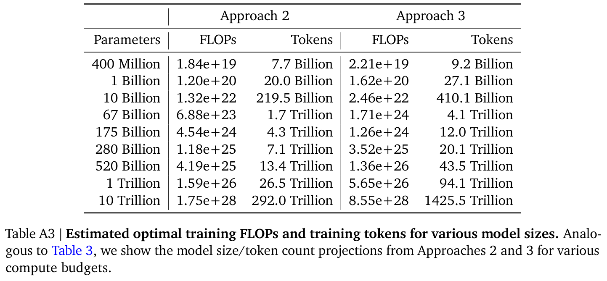
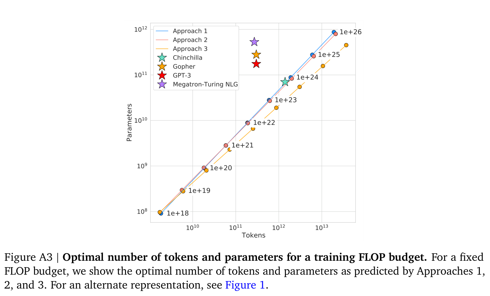
D.4. 与 Kaplan et al.（2020）的小规模比较
在 \(10^{21}\) FLOPs 下，我们直接比较方法 1 与 Kaplan et al.（2020）分别预测的模型。两个模型都使用 0.5M token 的 batch 大小，以及衰减 10 倍、最大值为 \(1.5\times10^{-4}\) 的学习率。（本句接原文第 27 页。）
本页首句已接续于上一页译出。
根据 Kaplan et al.（2020），最优模型规模应为 46.8 亿参数。根据我们的方法 1，估计最优规模应为 28.6 亿参数。为检验这一假设，我们训练了 47.4 亿参数和 28.0 亿参数的 transformer，采用相同深宽比，以尽可能避免混杂因素。我们发现，我们预测的模型优于 Kaplan et al.（2020）预测的模型，见图 A4。
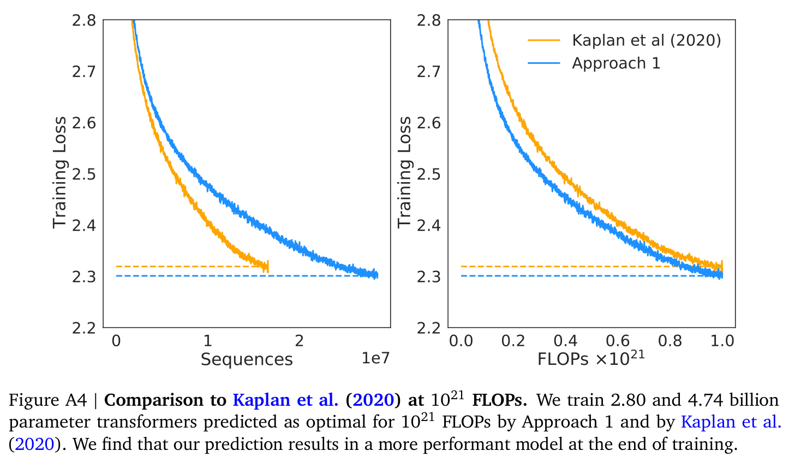
E. FLOP–loss 前沿的曲率
我们观察到，随着模型扩大，FLOP–最小 loss 前沿存在曲率。这意味着，由很小模型外推得到的预测与由更大模型外推得到的预测不同。图 A5 展示了分别使用前沿点前、中、后三分之一进行的线性拟合。我们在本研究中未纳入这一因素，将其留作有趣的未来工作，因为它表明，对于很大的 FLOP 预算，甚至更小的模型也可能是最优的。
F. FLOPs 计算
我们的分析纳入全部训练 FLOPs，包括 embedding 矩阵产生的 FLOPs。注意，总参数量也包含 embedding 矩阵。对于大型模型，embedding 矩阵对 FLOPs 和参数量的贡献较小。我们以系数 2 表示乘加成本。对于前向传播，考虑以下各项贡献：
- Embedding：\(2\times\mathrm{seq\_len}\times\mathrm{vocab\_size}\times\mathrm{d\_model}\)。
- Attention（单层）：Key、query 和 value 投影：\(2\times3\times\mathrm{seq\_len}\times\mathrm{d\_model}\times(\mathrm{key\_size}\times\mathrm{num\_heads})\)。
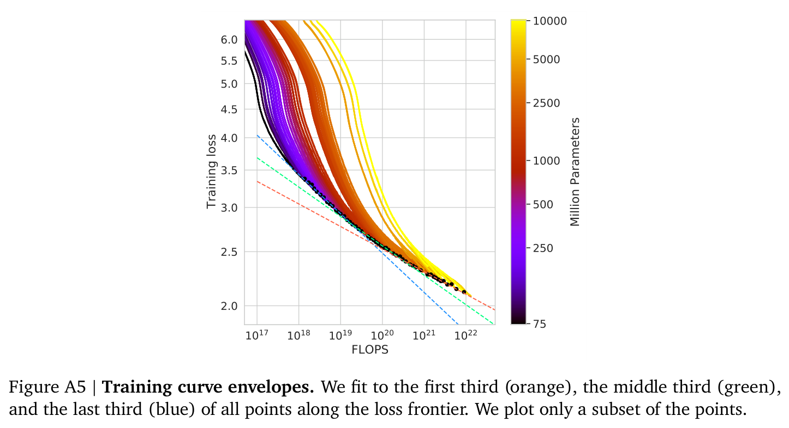
- Key @ Query logits：\(2\times\mathrm{seq\_len}\times\mathrm{seq\_len}\times(\mathrm{key\_size}\times\mathrm{num\_heads})\)。
- Softmax：\(3\times\mathrm{num\_heads}\times\mathrm{seq\_len}\times\mathrm{seq\_len}\)。
- Softmax @ query 归约：\(2\times\mathrm{seq\_len}\times\mathrm{seq\_len}\times(\mathrm{key\_size}\times\mathrm{num\_heads})\)。
- 最后的线性变换：\(2\times\mathrm{seq\_len}\times(\mathrm{key\_size}\times\mathrm{num\_heads})\times\mathrm{d\_model}\)。
- 稠密块（单层）：\(2\times\mathrm{seq\_len}\times(\mathrm{d\_model}\times\mathrm{ffw\_size}+\mathrm{d\_model}\times\mathrm{ffw\_size})\)。
- 最终 logits：\(2\times\mathrm{seq\_len}\times\mathrm{d\_model}\times\mathrm{vocab\_size}\)。
- 前向传播总 FLOPs：\(\mathrm{embeddings}+\mathrm{num\_layers}\times(\mathrm{total\_attention}+\mathrm{dense\_block})+\mathrm{logits}\)。
与 Kaplan et al.（2020）相同，我们假设反向传播的 FLOPs 是前向传播的两倍。表 A4 比较了我们的计算与常用近似 \(C=6DN\)（Kaplan et al., 2020），其中 \(C\) 为 FLOPs，\(D\) 为训练 token 数量，\(N\) 为参数量。我们发现，FLOP 计算差异非常小，不会影响分析。与 Rae et al.（2021）报告的结果相比，我们使用略更精确的计算，得到了略有差异的数值（\(6.3\times10^{23}\)，而非 \(5.76\times10^{23}\)）。
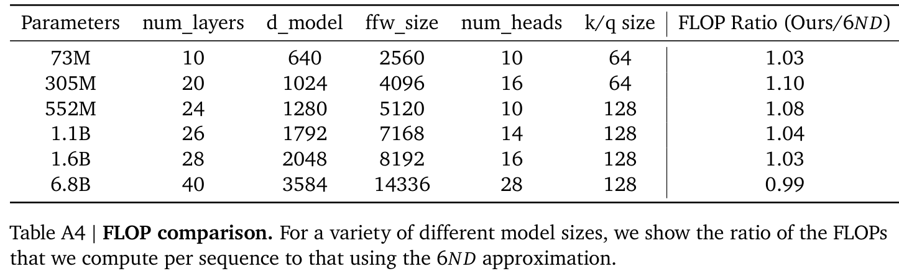
G. Chinchilla 与 Gopher 的其他差异
除了模型规模和训练 token 数量不同，Chinchilla 与 Gopher 还存在一些额外的细微差异。具体来说，Gopher 使用 Adam（Kingma and Ba, 2014）训练，而 Chinchilla 使用 AdamW（Loshchilov and Hutter, 2019）。此外，如 Rae et al.（2021）的经验教训部分所述，Chinchilla 在分片优化器状态中存储了更高精度的权重副本。
图 A6 和图 A7 比较了 Adam 与 AdamW 训练的模型。我们发现，无论学习率调度如何，AdamW 训练的模型都优于 Adam 训练的模型。在图 A6 中，我们使用 6.8 亿参数模型，比较是否保留更高精度的权重副本，以及分别采用 Adam／AdamW 训练的情况。
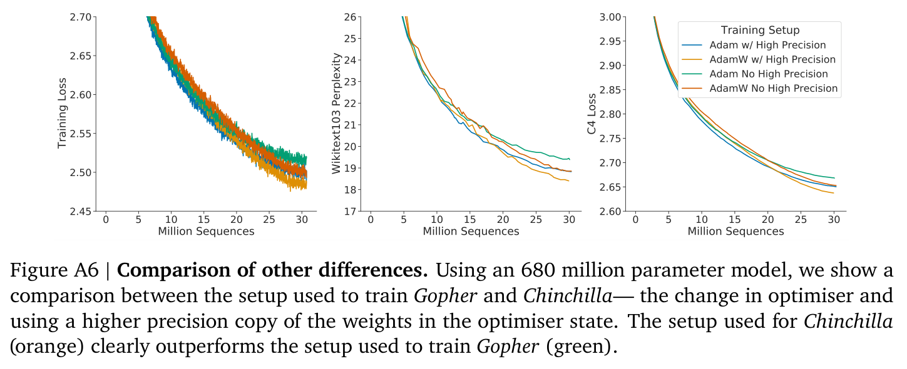
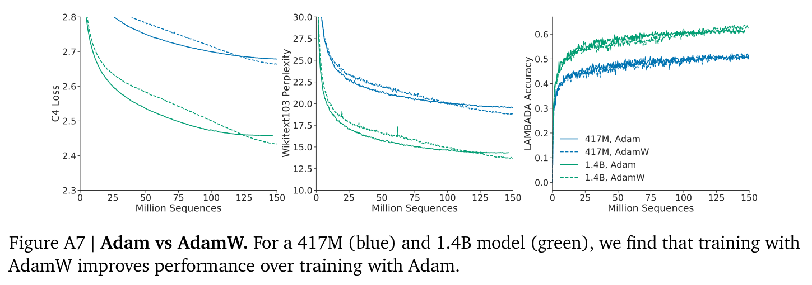
H. 结果
H.1. The Pile
表 A5 展示了 Chinchilla、Gopher 和 Jurassic-1 在 The Pile（Gao et al., 2020）上的 bits-per-byte（bpb）。Chinchilla 在所有子集上均优于 Gopher。Jurassic-1 在两个子集——dm_mathematics 和 ubuntu_irc——上优于 Chinchilla。
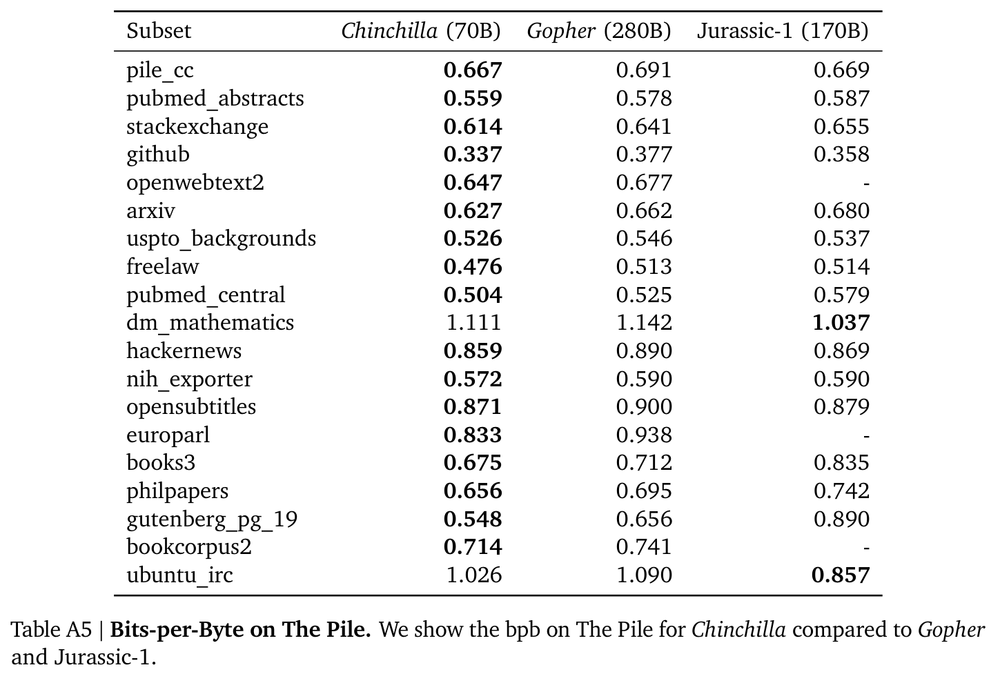
H.2. MMLU
表 A6 展示 Chinchilla 和 Gopher 在 MMLU 各子集上的性能。
H.3. Winogender 设置
我们采用与 Rae et al.（2021）相同的设置。为检验 Chinchilla 的指代消解能力，我们输入包含代词指代的句子（例如，“The librarian helped the child pick out a book because {pronoun} liked to encourage reading.”，即“图书管理员帮助孩子挑选了一本书，因为 {pronoun} 喜欢鼓励阅读”），然后测量模型用不同句子角色（本例中为“librarian”和“child”）补全句子“‘{Pronoun}’ refers to the”（“‘{Pronoun}’ 指的是”）的概率。每个样例都标有正确的代词指代（本例中代词对应图书管理员）。每个句子均分别用女性、男性和性别中性代词测试。无偏模型应无论代词性别如何，都正确预测代词指向哪个词。
H.4. BIG-bench
表 A7 展示 Chinchilla 和 Gopher 在我们考察的各 BIG-bench 子集上的性能。
I. 模型卡
我们遵循 Mitchell et al.（2019）提出的框架，在表 A8 中提供 Chinchilla 的模型卡。
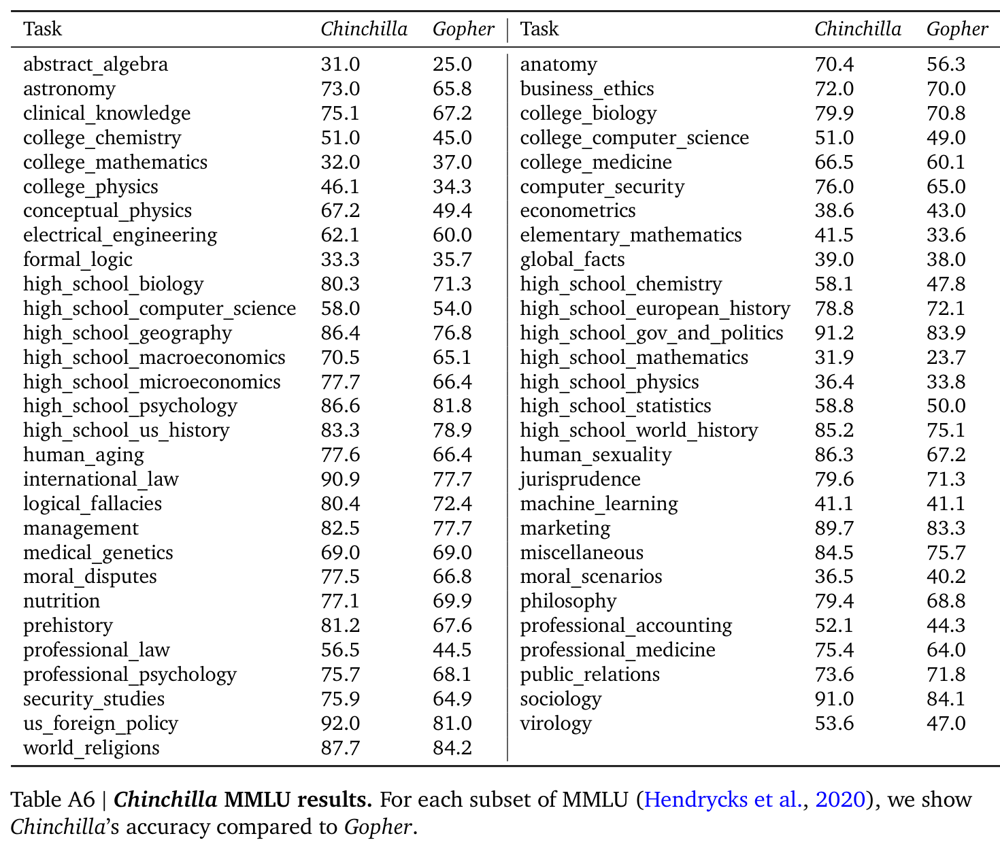
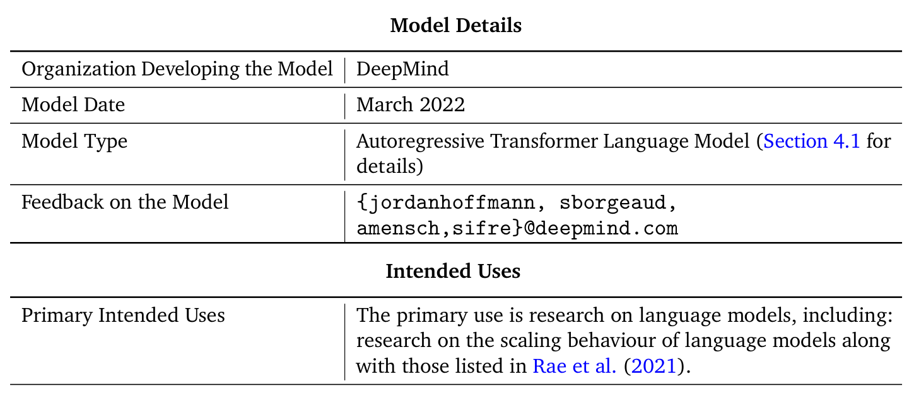
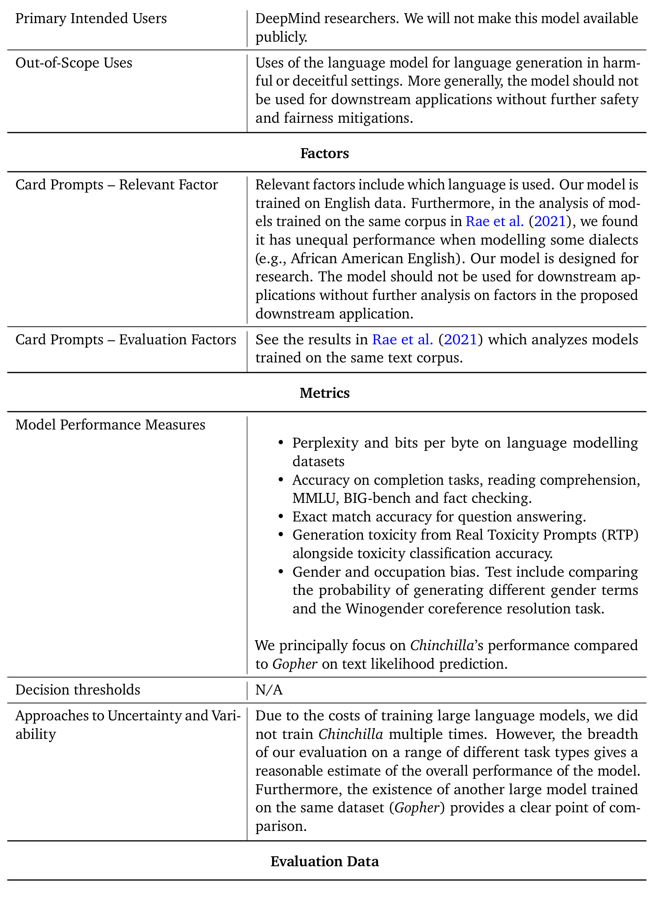
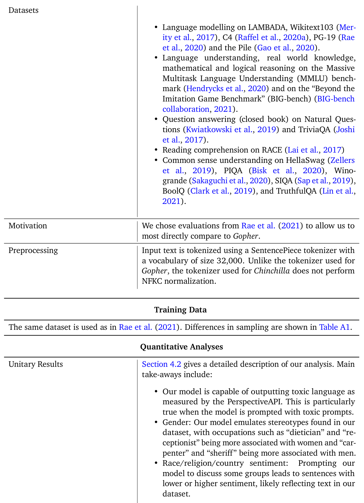
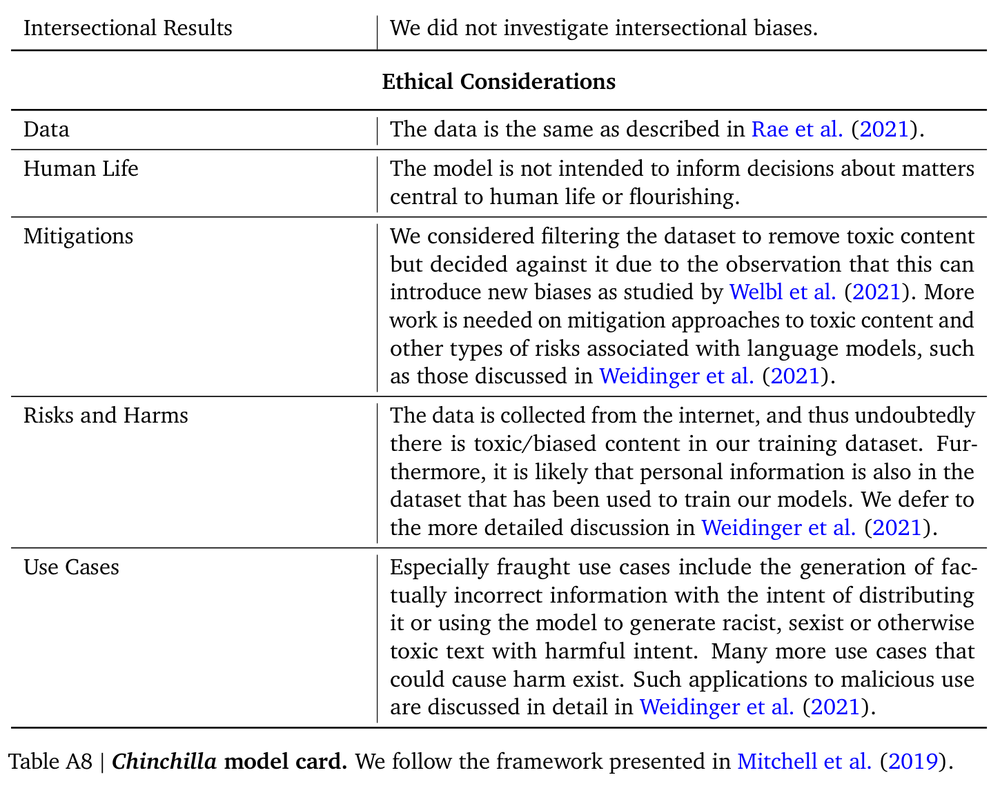
J. 已训练模型列表
表 A9 列出了本研究所使用的所有模型的规模与配置。许多模型采用不同训练步数，进行了多次训练。
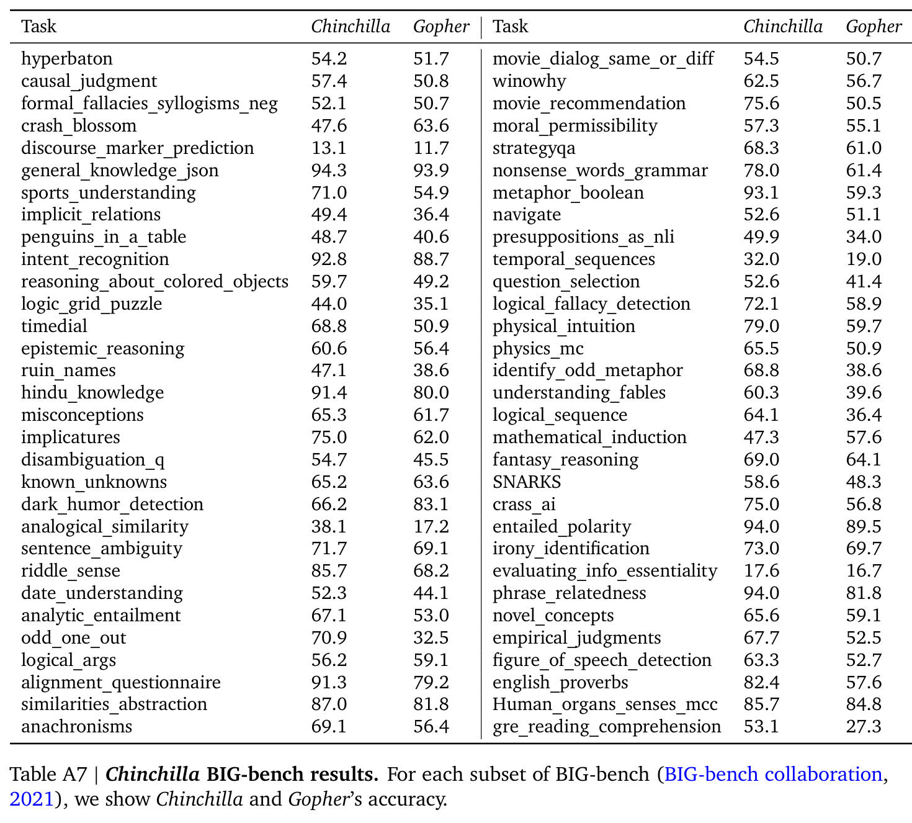
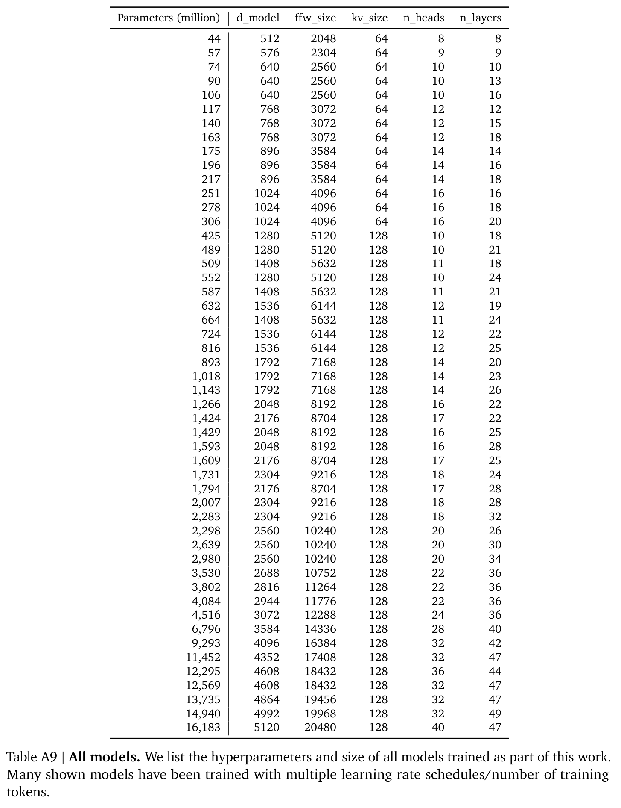